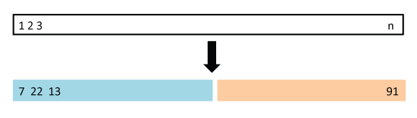
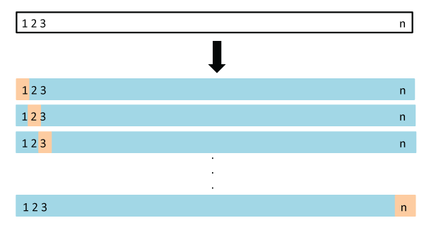
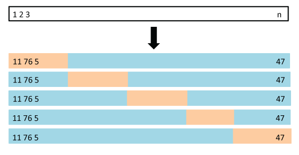

3.8 Robust Training
Contents
3.8 Robust Training#
This chapter will review two foundamental concepts and strategies for training machine learning models:
Cross-Validation
Hyper-parameter tuning
1. Cross validation#
Cross-validation is a widely used technique in machine learning to assess the performance and generalization of a model. It involves partitioning the dataset into multiple subsets, training the model on a portion of the data, and then evaluating its performance on the remaining data. This process is repeated several times, and the results are averaged to obtain a more reliable estimate of the model’s performance. The primary goal is to mitigate the risk of overfitting and obtain a more robust evaluation metric.
There are several tutorials on cross-validation.
Cross-validation divides the data set between a training set and a validation set:
 From: scikit-learn: concept for training and validation set.
Often the validation set ends up underestimating the prediction errors (model uncertainties) because the validation set is often smaller than the training set. To alleviate that, we can perform cross-validation over many folds of selecting a validation and training set.
 From: scikit-learn
From: scikit-learn
Data Splitting: Cross-validation involves partitioning a dataset into multiple subsets, typically a training set and a testing set. This splitting allows for model assessment and validation.
Estimation: Cross-validation is primarily used to assess the predictive performance of machine learning models or statistical models. It helps in estimating how well a model will generalize to new, unseen data by testing its performance on data that was not used in training.
Correlated Data: Cross-validation does not explicitly address correlated data, and its effectiveness can be influenced by the data splitting strategy. When data exhibits strong correlations, it’s essential to carefully design the cross-validation procedure to ensure that all subsets represent the overall data distribution.
Applications: Cross-validation is widely employed in model selection, hyperparameter tuning, and assessing the generalization ability of models.
We will now randomly select a training and validation set using the sklearn module on a GNSS time series and using a linear regression problem
import requests, zipfile, io, gzip, glob, os
import matplotlib.pyplot as plt
import numpy as np
import pandas as pd
import requests
%matplotlib inline
# The station designation
sta="P395"
print("http://geodesy.unr.edu/gps_timeseries/tenv/IGS14/" + sta + ".tenv")
zip_file_url="http://geodesy.unr.edu/gps_timeseries/tenv/IGS14/"+ sta + ".tenv"
r = requests.get(zip_file_url)
# create a list of strings with itemized list above
ll = ['station ID (SSSS)','date (yymmmdd)',
'decimal year','modified Julian day','GPS week','day of GPS week',
'longitude (degrees) of reference meridian','delta e (m)',
'delta n (m)','delta v (m)','antenna height (m)',
'sigma e (m)','sigma n (m)','sigma v (m)',
'correlation en','correlation ev','correlation nv']
# transform r.content into a pandas dataframe
# first split r.content with \n separator
# Decode the content if it's in bytes
content_str = r.content.decode('utf-8')
# Split the content by the newline character
lines = content_str.split('\n')
# Now `lines` is a list of strings, each representing a line from the content
print(lines[0])
# then transform lines into a pandas dataframe
df = pd.DataFrame([x.split() for x in lines])
# assign column names to df a
df.columns = ll
#convert columns to numeric
df = df.apply(pd.to_numeric, errors='ignore')
df.dropna()
df.head()
http://geodesy.unr.edu/gps_timeseries/tenv/IGS14/P395.tenv
P395 06JAN25 2006.0671 53760 1359 3 -123.9 3347.67917 4987420.31375 53.03678 0.0083 0.00069 0.00105 0.00327 -0.04832 0.01695 -0.31816
| station ID (SSSS) | date (yymmmdd) | decimal year | modified Julian day | GPS week | day of GPS week | longitude (degrees) of reference meridian | delta e (m) | delta n (m) | delta v (m) | antenna height (m) | sigma e (m) | sigma n (m) | sigma v (m) | correlation en | correlation ev | correlation nv | |
|---|---|---|---|---|---|---|---|---|---|---|---|---|---|---|---|---|---|
| 0 | P395 | 06JAN25 | 2006.0671 | 53760.0 | 1359.0 | 3.0 | -123.9 | 3347.67917 | 4.987420e+06 | 53.03678 | 0.0083 | 0.00069 | 0.00105 | 0.00327 | -0.04832 | 0.01695 | -0.31816 |
| 1 | P395 | 06JAN26 | 2006.0698 | 53761.0 | 1359.0 | 4.0 | -123.9 | 3347.68086 | 4.987420e+06 | 53.03003 | 0.0083 | 0.00069 | 0.00104 | 0.00321 | -0.04648 | 0.00271 | -0.30970 |
| 2 | P395 | 06JAN27 | 2006.0726 | 53762.0 | 1359.0 | 5.0 | -123.9 | 3347.68072 | 4.987420e+06 | 53.03906 | 0.0083 | 0.00069 | 0.00105 | 0.00326 | -0.02367 | 0.00817 | -0.31941 |
| 3 | P395 | 06JAN28 | 2006.0753 | 53763.0 | 1359.0 | 6.0 | -123.9 | 3347.67938 | 4.987420e+06 | 53.04382 | 0.0083 | 0.00069 | 0.00105 | 0.00324 | -0.03681 | 0.00908 | -0.30515 |
| 4 | P395 | 06JAN29 | 2006.0780 | 53764.0 | 1360.0 | 0.0 | -123.9 | 3347.68042 | 4.987420e+06 | 53.03513 | 0.0083 | 0.00068 | 0.00105 | 0.00328 | -0.04815 | 0.00619 | -0.33029 |
# remove first value for delta e, delta n, delta v to make relative position with respect to the first time. Add these as new columns
df['new delta e (m)'] = df['delta e (m)'] - df['delta e (m)'].values[0]
df['new delta n (m)'] = df['delta n (m)'] - df['delta n (m)'].values[0]
df['new delta v (m)'] = df['delta v (m)'] - df['delta v (m)'].values[0]
# drop nans in new delta e (m) and decimal year columns
df = df.dropna(subset=['new delta e (m)', 'decimal year'])
from sklearn.linear_model import LinearRegression
# convert the data into numpy arrays.
E = np.asarray(df['new delta e (m)']).reshape(-1, 1)# reshaping was necessary to be an argument of Linear regress
# E = np.asarray(df['east'][df['station']==sta]).reshape(-1, 1)# reshaping was necessary to be an argument of Linear regress
# make a new time array
t = np.asarray(df['decimal year']).reshape(-1, 1)
tt = np.linspace(np.min(t),np.max(t),1000)
# perform the linear regression. First we will use the entire available data
regr = LinearRegression()
# we will first perform the fit:
regr.fit(t,E)
# We will first predict the fit:
Epred=regr.predict(t)
# The coefficients
print('Coefficient / Velocity eastward (mm/year): ', regr.coef_[0][0])
# plot the data
plt.plot(t,E,'b',label='data')
Coefficient / Velocity eastward (mm/year): -0.006439731291127403
[<matplotlib.lines.Line2D at 0x12f725b50>]
# we randomly select values and split the data between training and validation set.
from sklearn.model_selection import ShuffleSplit
# we split once the data between a training and a validating set
n=1 # we do this selection once
v_size = 0.3 # 30% of the data will be randomly selected to be the validation set.
rs = ShuffleSplit(n_splits=n, test_size=.3, random_state=0)
for train_index, val_index in rs.split(E):
E_train, E_val = E[train_index], E[val_index]
t_train, t_val = t[train_index], t[val_index]
plt.scatter(t_train,E_train,marker="o");plt.grid(True);plt.ylabel('East (mm)')
plt.scatter(t_val,E_val,marker="o",s=6,c="red")
plt.xlabel('Time (years)')
plt.title('East component')
plt.legend(['training set','validation set'])
<matplotlib.legend.Legend at 0x30f3e3ee0>
from sklearn.linear_model import LinearRegression
from sklearn.metrics import mean_squared_error, r2_score
# now fit the data on the training set.
regr = LinearRegression()
# Fit on training data:
regr.fit(t_train,E_train)
# We will first predict the fit:
Epred=regr.predict(t_train)
Epred_val=regr.predict(t_val)
# The coefficients
print('Training set: Coefficient / Velocity eastward (mm/year): ', regr.coef_[0][0])
print('MSE (mean square error) on training set (mm): %.2f'
% mean_squared_error(Epred, E_train))
# The coefficient of determination: 1 is the perfect prediction
print('Coefficient of determination on training set: %.2f'
% r2_score(Epred, E_train))
print('MSE on validation set (mm): %.2f and coefficient of determiniation on %.2f' %(mean_squared_error(Epred_val, E_val), r2_score(Epred_val, E_val)))
plt.plot(t,E);plt.grid(True);plt.ylabel('East (mm)')
plt.plot(t_train,Epred,color="red",linewidth=4)
plt.plot(t_val,Epred_val,color="green")
plt.legend(['data','fit on training','fit on validation'])
plt.title('Random selection for data split')
Training set: Coefficient / Velocity eastward (mm/year): -0.006437910455226973
MSE (mean square error) on training set (mm): 0.00
Coefficient of determination on training set: 0.99
MSE on validation set (mm): 0.00 and coefficient of determiniation on 0.99
Text(0.5, 1.0, 'Random selection for data split')
2.5 Leave One Out Cross Validation#
LOOCV splits the data in 2 sets (training and validation) n times (n is the number of data points). At each repeat, the training set is all but one data, the validation set is one element.
 Advantages: it has far less bias with respect to the training data. It does not overestimate the test error. Repeated LOOCV will give the exact same results.
Disadvantages: it is computationally intensive.
Data Splitting: LOOCV is an extreme form of cross-validation where, for each iteration, only one data point is left out as the test set, and the remaining data is used as the training set. This process is repeated for each data point, effectively creating as many folds as there are data points.
Estimation: LOOCV is primarily used for assessing model performance and estimating predictive accuracy. By evaluating the model against all data points one at a time, LOOCV provides a robust assessment of a model’s ability to generalize to unseen data.
Correlated Data: LOOCV, like other cross-validation methods, may not explicitly address correlated data. However, its performance can be influenced by the correlation structure in the data. For datasets with strong correlations, LOOCV may lead to models that are overly optimistic since it often tests a model on data points that are closely related to the training set.
Applications: LOOCV is valuable for evaluating machine learning and statistical models, particularly when you have a limited amount of data.
from sklearn.model_selection import LeaveOneOut
loo = LeaveOneOut()
vel = np.zeros(len(E)) # initalize a vector to store the regression values
mse_train = np.zeros(len(E))
mse_val = np.zeros(len(E))
r2s = np.zeros(len(E))
i=0
for train_index, test_index in loo.split(E):
E_train, E_val = E[train_index], E[val_index]
t_train, t_val = t[train_index], t[val_index]
# now fit the data on the training set.
regr = LinearRegression()
# Fit on training data:
regr.fit(t_train,E_train)
# We will first predict the fit:
Epred_train=regr.predict(t_train)
Epred_val=regr.predict(t_val)
# The coefficients
vel[i]= regr.coef_[0][0]
mse_train[i]= mean_squared_error(E_train, Epred_train)
mse_val[i]= mean_squared_error(E_val, Epred_val)
r2s[i]=r2_score(E_val, Epred_val)
i+=1
# the data shows clearly a trend, so the predictions of the trends are close to each other:
print("mean of the velocity estimates %f4.2 and the standard deviation %f4.2"%(np.mean(vel),np.std(vel)))
# the test error is the average of the mean-square-errors
print("CV = %4.2f"%(np.mean(mse_val)))
mean of the velocity estimates -0.0064404.2 and the standard deviation 0.0000004.2
CV = 0.00
LOOCV is rarely used in practice. This example is just to show the extreme end member of cross-fold validation.
2.6 K-fold cross validation#
Designed to reduce the computational cost of LOOCV. Randomly devide over k groups/folds of approximately equal size. It is typical to use 5 or 10.

from sklearn.model_selection import KFold
# let's try on 10-folds, 10 adjacent split of the data.
k=10
kf = KFold(n_splits=k)
vel = np.zeros(k) # initalize a vector to store the regression values
mse_train = np.zeros(k)
mse_val = np.zeros(k)
r2s = np.zeros(k)
i=0
for train_index, val_index in kf.split(E):
E_train, E_val = E[train_index], E[val_index]
t_train, t_val = t[train_index], t[val_index]
# now fit the data on the training set.
regr = LinearRegression()
# Fit on training data:
regr.fit(t_train,E_train)
# We will first predict the fit:
Epred_train=regr.predict(t_train)
Epred_val=regr.predict(t_val)
# The coefficients
vel[i]= regr.coef_[0][0]
mse_val[i]= mean_squared_error(E_val, Epred_val)
mse_train[i]= mean_squared_error(E_train, Epred_train)
r2s[i]=r2_score(E_train, Epred_train)
i+=1
# the data shows clearly a trend, so the predictions of the trends are close to each other:
print("mean of the velocity estimates %4.2f and the standard deviation %4.2f"%(np.mean(vel),np.std(vel)))
# the test error is the average of the mean-square-errors
print("mean MSE for training set : %4.2f and the validation set: %4.2f"%(np.mean(mse_train),np.mean(mse_val)))
mean of the velocity estimates -0.01 and the standard deviation 0.00
mean MSE for training set : 0.00 and the validation set: 0.00
2. Hyper-parameter tuning#
In classic machine learning, models often have parameters that are learned from the training data (such as weights in a linear regression model), and hyperparameters that are external configuration settings. Hyperparameters are not learned from the data but are set prior to the training process and can significantly impact the model’s performance.
The goal of hyperparameter tuning is to find the optimal combination of hyperparameter values that maximizes the model’s performance on a given dataset. This process helps fine-tune the model to achieve the best possible results and avoid overfitting or underfitting.
Hyper-parameter tuning is now standard and should be performed in every work.
Several approaches exists to hyper-parameter tuning:
Manual Tuning:
While more time-consuming, manual tuning involves domain experts iteratively adjusting hyperparameters based on their understanding of the problem and the model’s behavior.
This approach can be effective when the hyperparameter space is relatively small or when there is substantial domain knowledge.
This is a good step for initial exploration and intuition-building experiment, but systematic approaches like described below will be required for robust assessment.
Grid Search:
In this method, a predefined set of hyperparameter values is specified, and the model is trained and evaluated for all possible combinations.
While thorough, grid search can be computationally expensive, especially for a large number of hyperparameters or when the search space is extensive.
This method is implemented in the
scikit-learnecosystem asmodel_selection.GridSearchCV, which uses cross-validation to train-test each model given the tested hyper-parameters.
Random Search:
Random search involves randomly selecting combinations of hyperparameter values from a predefined distribution of hyperparameters (e.g., uniform or normal).
This approach is more computationally efficient than grid search, as it explores a diverse set of hyperparameter combinations.
The method is implement in the
scikit-learnecosystem asmodel_selection.RandomizedSearchCV, which uses cross-validation for each
Bayesian Optimization:
Bayesian optimization employs probabilistic models to predict the performance of different hyperparameter configurations.
It adapts its search based on the results of previous evaluations, allowing it to focus on promising regions of the hyperparameter space.
Below is a tutorial using the
digitsdata sets.
# basic tools
import numpy as np
import matplotlib.pyplot as plt
from sklearn.model_selection import train_test_split
# dataseta
from sklearn.datasets import load_digits
digits = load_digits()
digits.keys()
dict_keys(['data', 'target', 'frame', 'feature_names', 'target_names', 'images', 'DESCR'])
# explore data type
data,y = digits["data"].copy(),digits["target"].copy()
print(type(data[0][:]),type(y[0]))
# note that we do not modify the raw data that is stored on the digits dictionary.
<class 'numpy.ndarray'> <class 'numpy.int64'>
Plot the data
plt.matshow(digits["images"][2])
<matplotlib.image.AxesImage at 0x30f759df0>
print(min(data[0]),max(data[0]))
from sklearn.preprocessing import MinMaxScaler
from sklearn.model_selection import train_test_split
scaler = MinMaxScaler()
scaler.fit_transform(data)# fit the model for data normalization
newdata = scaler.transform(data) # transform the data. watch that data was converted to a numpy array
# Split data into 80% train and 20% test subsets
print(f"There are {data.shape[0]} data samples")
X_train, X_test, y_train, y_test = train_test_split(
data, y, test_size=0.2, shuffle=False)
0.0 15.0
There are 1797 data samples
from sklearn import metrics
from sklearn.neighbors import KNeighborsClassifier
# Support Vector Machine classifier
clf = KNeighborsClassifier(n_neighbors=3)
clf.fit(X_train, y_train) # learn
knn_prediction = clf.predict(X_test) # predict on test
print("SVC Accuracy:", metrics.accuracy_score(y_true=y_test ,y_pred=knn_prediction))
SVC Accuracy: 0.9666666666666667
what are the parameters we are trying to optimize?
clf.get_params()
{'algorithm': 'auto',
'leaf_size': 30,
'metric': 'minkowski',
'metric_params': None,
'n_jobs': None,
'n_neighbors': 3,
'p': 2,
'weights': 'uniform'}
A search consists of:
an estimator (regressor or classifier such as
KNN());a parameter space;
a method for searching or sampling candidates (grid search or random selection);
a cross-validation scheme; and
a loss function or a scoring metrics.
1. Grid Search cross validation.#
Performs the search in the brute-force way using cross-validation. One has to define the parameter space. The scikit-learn function is GridSearchCV. More details here.
from sklearn.model_selection import GridSearchCV
param_grid = [
{'n_neighbors': [1,2,3,4,5,6,7,8,9,10], 'weights': ['uniform','distance'], 'algorithm': [ 'ball_tree', 'kd_tree'],
'metric':['euclidean','manhattan','chebyshev','minkowski']}
]
The algorithm will search for all combinations of parameters, which can be from the model algorithms or the choice of features.
search = GridSearchCV(clf, param_grid, cv=5,verbose=3)
search.fit(X_train, y_train) # learn
Fitting 5 folds for each of 160 candidates, totalling 800 fits
[CV 1/5] END algorithm=ball_tree, metric=euclidean, n_neighbors=1, weights=uniform;, score=0.948 total time= 0.0s
[CV 2/5] END algorithm=ball_tree, metric=euclidean, n_neighbors=1, weights=uniform;, score=0.983 total time= 0.0s
[CV 3/5] END algorithm=ball_tree, metric=euclidean, n_neighbors=1, weights=uniform;, score=0.983 total time= 0.0s
[CV 4/5] END algorithm=ball_tree, metric=euclidean, n_neighbors=1, weights=uniform;, score=0.965 total time= 0.0s
[CV 5/5] END algorithm=ball_tree, metric=euclidean, n_neighbors=1, weights=uniform;, score=0.986 total time= 0.0s
[CV 1/5] END algorithm=ball_tree, metric=euclidean, n_neighbors=1, weights=distance;, score=0.948 total time= 0.0s
[CV 2/5] END algorithm=ball_tree, metric=euclidean, n_neighbors=1, weights=distance;, score=0.983 total time= 0.0s
[CV 3/5] END algorithm=ball_tree, metric=euclidean, n_neighbors=1, weights=distance;, score=0.983 total time= 0.0s
[CV 4/5] END algorithm=ball_tree, metric=euclidean, n_neighbors=1, weights=distance;, score=0.965 total time= 0.0s
[CV 5/5] END algorithm=ball_tree, metric=euclidean, n_neighbors=1, weights=distance;, score=0.986 total time= 0.0s
[CV 1/5] END algorithm=ball_tree, metric=euclidean, n_neighbors=2, weights=uniform;, score=0.938 total time= 0.0s
[CV 2/5] END algorithm=ball_tree, metric=euclidean, n_neighbors=2, weights=uniform;, score=0.990 total time= 0.0s
[CV 3/5] END algorithm=ball_tree, metric=euclidean, n_neighbors=2, weights=uniform;, score=0.965 total time= 0.0s
[CV 4/5] END algorithm=ball_tree, metric=euclidean, n_neighbors=2, weights=uniform;, score=0.955 total time= 0.0s
[CV 5/5] END algorithm=ball_tree, metric=euclidean, n_neighbors=2, weights=uniform;, score=0.983 total time= 0.0s
[CV 1/5] END algorithm=ball_tree, metric=euclidean, n_neighbors=2, weights=distance;, score=0.948 total time= 0.0s
[CV 2/5] END algorithm=ball_tree, metric=euclidean, n_neighbors=2, weights=distance;, score=0.983 total time= 0.0s
[CV 3/5] END algorithm=ball_tree, metric=euclidean, n_neighbors=2, weights=distance;, score=0.983 total time= 0.0s
[CV 4/5] END algorithm=ball_tree, metric=euclidean, n_neighbors=2, weights=distance;, score=0.965 total time= 0.0s
[CV 5/5] END algorithm=ball_tree, metric=euclidean, n_neighbors=2, weights=distance;, score=0.986 total time= 0.0s
[CV 1/5] END algorithm=ball_tree, metric=euclidean, n_neighbors=3, weights=uniform;, score=0.944 total time= 0.0s
[CV 2/5] END algorithm=ball_tree, metric=euclidean, n_neighbors=3, weights=uniform;, score=0.990 total time= 0.0s
[CV 3/5] END algorithm=ball_tree, metric=euclidean, n_neighbors=3, weights=uniform;, score=0.972 total time= 0.0s
[CV 4/5] END algorithm=ball_tree, metric=euclidean, n_neighbors=3, weights=uniform;, score=0.948 total time= 0.0s
[CV 5/5] END algorithm=ball_tree, metric=euclidean, n_neighbors=3, weights=uniform;, score=0.990 total time= 0.0s
[CV 1/5] END algorithm=ball_tree, metric=euclidean, n_neighbors=3, weights=distance;, score=0.944 total time= 0.0s
[CV 2/5] END algorithm=ball_tree, metric=euclidean, n_neighbors=3, weights=distance;, score=0.990 total time= 0.0s
[CV 3/5] END algorithm=ball_tree, metric=euclidean, n_neighbors=3, weights=distance;, score=0.976 total time= 0.0s
[CV 4/5] END algorithm=ball_tree, metric=euclidean, n_neighbors=3, weights=distance;, score=0.948 total time= 0.0s
[CV 5/5] END algorithm=ball_tree, metric=euclidean, n_neighbors=3, weights=distance;, score=0.986 total time= 0.0s
[CV 1/5] END algorithm=ball_tree, metric=euclidean, n_neighbors=4, weights=uniform;, score=0.931 total time= 0.0s
[CV 2/5] END algorithm=ball_tree, metric=euclidean, n_neighbors=4, weights=uniform;, score=0.976 total time= 0.0s
[CV 3/5] END algorithm=ball_tree, metric=euclidean, n_neighbors=4, weights=uniform;, score=0.951 total time= 0.0s
[CV 4/5] END algorithm=ball_tree, metric=euclidean, n_neighbors=4, weights=uniform;, score=0.955 total time= 0.0s
[CV 5/5] END algorithm=ball_tree, metric=euclidean, n_neighbors=4, weights=uniform;, score=0.976 total time= 0.0s
[CV 1/5] END algorithm=ball_tree, metric=euclidean, n_neighbors=4, weights=distance;, score=0.941 total time= 0.0s
[CV 2/5] END algorithm=ball_tree, metric=euclidean, n_neighbors=4, weights=distance;, score=0.990 total time= 0.0s
[CV 3/5] END algorithm=ball_tree, metric=euclidean, n_neighbors=4, weights=distance;, score=0.976 total time= 0.0s
[CV 4/5] END algorithm=ball_tree, metric=euclidean, n_neighbors=4, weights=distance;, score=0.958 total time= 0.0s
[CV 5/5] END algorithm=ball_tree, metric=euclidean, n_neighbors=4, weights=distance;, score=0.983 total time= 0.0s
[CV 1/5] END algorithm=ball_tree, metric=euclidean, n_neighbors=5, weights=uniform;, score=0.938 total time= 0.0s
[CV 2/5] END algorithm=ball_tree, metric=euclidean, n_neighbors=5, weights=uniform;, score=0.976 total time= 0.0s
[CV 3/5] END algorithm=ball_tree, metric=euclidean, n_neighbors=5, weights=uniform;, score=0.944 total time= 0.0s
[CV 4/5] END algorithm=ball_tree, metric=euclidean, n_neighbors=5, weights=uniform;, score=0.955 total time= 0.0s
[CV 5/5] END algorithm=ball_tree, metric=euclidean, n_neighbors=5, weights=uniform;, score=0.983 total time= 0.0s
[CV 1/5] END algorithm=ball_tree, metric=euclidean, n_neighbors=5, weights=distance;, score=0.938 total time= 0.0s
[CV 2/5] END algorithm=ball_tree, metric=euclidean, n_neighbors=5, weights=distance;, score=0.979 total time= 0.0s
[CV 3/5] END algorithm=ball_tree, metric=euclidean, n_neighbors=5, weights=distance;, score=0.965 total time= 0.0s
[CV 4/5] END algorithm=ball_tree, metric=euclidean, n_neighbors=5, weights=distance;, score=0.955 total time= 0.0s
[CV 5/5] END algorithm=ball_tree, metric=euclidean, n_neighbors=5, weights=distance;, score=0.976 total time= 0.0s
[CV 1/5] END algorithm=ball_tree, metric=euclidean, n_neighbors=6, weights=uniform;, score=0.938 total time= 0.0s
[CV 2/5] END algorithm=ball_tree, metric=euclidean, n_neighbors=6, weights=uniform;, score=0.965 total time= 0.0s
[CV 3/5] END algorithm=ball_tree, metric=euclidean, n_neighbors=6, weights=uniform;, score=0.948 total time= 0.0s
[CV 4/5] END algorithm=ball_tree, metric=euclidean, n_neighbors=6, weights=uniform;, score=0.955 total time= 0.0s
[CV 5/5] END algorithm=ball_tree, metric=euclidean, n_neighbors=6, weights=uniform;, score=0.979 total time= 0.0s
[CV 1/5] END algorithm=ball_tree, metric=euclidean, n_neighbors=6, weights=distance;, score=0.944 total time= 0.0s
[CV 2/5] END algorithm=ball_tree, metric=euclidean, n_neighbors=6, weights=distance;, score=0.979 total time= 0.0s
[CV 3/5] END algorithm=ball_tree, metric=euclidean, n_neighbors=6, weights=distance;, score=0.965 total time= 0.0s
[CV 4/5] END algorithm=ball_tree, metric=euclidean, n_neighbors=6, weights=distance;, score=0.951 total time= 0.0s
[CV 5/5] END algorithm=ball_tree, metric=euclidean, n_neighbors=6, weights=distance;, score=0.979 total time= 0.0s
[CV 1/5] END algorithm=ball_tree, metric=euclidean, n_neighbors=7, weights=uniform;, score=0.934 total time= 0.0s
[CV 2/5] END algorithm=ball_tree, metric=euclidean, n_neighbors=7, weights=uniform;, score=0.969 total time= 0.0s
[CV 3/5] END algorithm=ball_tree, metric=euclidean, n_neighbors=7, weights=uniform;, score=0.944 total time= 0.0s
[CV 4/5] END algorithm=ball_tree, metric=euclidean, n_neighbors=7, weights=uniform;, score=0.955 total time= 0.0s
[CV 5/5] END algorithm=ball_tree, metric=euclidean, n_neighbors=7, weights=uniform;, score=0.983 total time= 0.0s
[CV 1/5] END algorithm=ball_tree, metric=euclidean, n_neighbors=7, weights=distance;, score=0.934 total time= 0.0s
[CV 2/5] END algorithm=ball_tree, metric=euclidean, n_neighbors=7, weights=distance;, score=0.972 total time= 0.0s
[CV 3/5] END algorithm=ball_tree, metric=euclidean, n_neighbors=7, weights=distance;, score=0.951 total time= 0.0s
[CV 4/5] END algorithm=ball_tree, metric=euclidean, n_neighbors=7, weights=distance;, score=0.955 total time= 0.0s
[CV 5/5] END algorithm=ball_tree, metric=euclidean, n_neighbors=7, weights=distance;, score=0.983 total time= 0.0s
[CV 1/5] END algorithm=ball_tree, metric=euclidean, n_neighbors=8, weights=uniform;, score=0.920 total time= 0.0s
[CV 2/5] END algorithm=ball_tree, metric=euclidean, n_neighbors=8, weights=uniform;, score=0.969 total time= 0.0s
[CV 3/5] END algorithm=ball_tree, metric=euclidean, n_neighbors=8, weights=uniform;, score=0.944 total time= 0.0s
[CV 4/5] END algorithm=ball_tree, metric=euclidean, n_neighbors=8, weights=uniform;, score=0.951 total time= 0.0s
[CV 5/5] END algorithm=ball_tree, metric=euclidean, n_neighbors=8, weights=uniform;, score=0.983 total time= 0.0s
[CV 1/5] END algorithm=ball_tree, metric=euclidean, n_neighbors=8, weights=distance;, score=0.931 total time= 0.0s
[CV 2/5] END algorithm=ball_tree, metric=euclidean, n_neighbors=8, weights=distance;, score=0.976 total time= 0.0s
[CV 3/5] END algorithm=ball_tree, metric=euclidean, n_neighbors=8, weights=distance;, score=0.944 total time= 0.0s
[CV 4/5] END algorithm=ball_tree, metric=euclidean, n_neighbors=8, weights=distance;, score=0.955 total time= 0.0s
[CV 5/5] END algorithm=ball_tree, metric=euclidean, n_neighbors=8, weights=distance;, score=0.986 total time= 0.0s
[CV 1/5] END algorithm=ball_tree, metric=euclidean, n_neighbors=9, weights=uniform;, score=0.931 total time= 0.0s
[CV 2/5] END algorithm=ball_tree, metric=euclidean, n_neighbors=9, weights=uniform;, score=0.969 total time= 0.0s
[CV 3/5] END algorithm=ball_tree, metric=euclidean, n_neighbors=9, weights=uniform;, score=0.944 total time= 0.0s
[CV 4/5] END algorithm=ball_tree, metric=euclidean, n_neighbors=9, weights=uniform;, score=0.944 total time= 0.0s
[CV 5/5] END algorithm=ball_tree, metric=euclidean, n_neighbors=9, weights=uniform;, score=0.983 total time= 0.0s
[CV 1/5] END algorithm=ball_tree, metric=euclidean, n_neighbors=9, weights=distance;, score=0.931 total time= 0.0s
[CV 2/5] END algorithm=ball_tree, metric=euclidean, n_neighbors=9, weights=distance;, score=0.972 total time= 0.0s
[CV 3/5] END algorithm=ball_tree, metric=euclidean, n_neighbors=9, weights=distance;, score=0.944 total time= 0.0s
[CV 4/5] END algorithm=ball_tree, metric=euclidean, n_neighbors=9, weights=distance;, score=0.951 total time= 0.0s
[CV 5/5] END algorithm=ball_tree, metric=euclidean, n_neighbors=9, weights=distance;, score=0.983 total time= 0.0s
[CV 1/5] END algorithm=ball_tree, metric=euclidean, n_neighbors=10, weights=uniform;, score=0.924 total time= 0.0s
[CV 2/5] END algorithm=ball_tree, metric=euclidean, n_neighbors=10, weights=uniform;, score=0.969 total time= 0.0s
[CV 3/5] END algorithm=ball_tree, metric=euclidean, n_neighbors=10, weights=uniform;, score=0.944 total time= 0.0s
[CV 4/5] END algorithm=ball_tree, metric=euclidean, n_neighbors=10, weights=uniform;, score=0.969 total time= 0.0s
[CV 5/5] END algorithm=ball_tree, metric=euclidean, n_neighbors=10, weights=uniform;, score=0.979 total time= 0.0s
[CV 1/5] END algorithm=ball_tree, metric=euclidean, n_neighbors=10, weights=distance;, score=0.927 total time= 0.0s
[CV 2/5] END algorithm=ball_tree, metric=euclidean, n_neighbors=10, weights=distance;, score=0.969 total time= 0.0s
[CV 3/5] END algorithm=ball_tree, metric=euclidean, n_neighbors=10, weights=distance;, score=0.944 total time= 0.0s
[CV 4/5] END algorithm=ball_tree, metric=euclidean, n_neighbors=10, weights=distance;, score=0.958 total time= 0.0s
[CV 5/5] END algorithm=ball_tree, metric=euclidean, n_neighbors=10, weights=distance;, score=0.983 total time= 0.0s
[CV 1/5] END algorithm=ball_tree, metric=manhattan, n_neighbors=1, weights=uniform;, score=0.924 total time= 0.0s
[CV 2/5] END algorithm=ball_tree, metric=manhattan, n_neighbors=1, weights=uniform;, score=0.986 total time= 0.0s
[CV 3/5] END algorithm=ball_tree, metric=manhattan, n_neighbors=1, weights=uniform;, score=0.958 total time= 0.0s
[CV 4/5] END algorithm=ball_tree, metric=manhattan, n_neighbors=1, weights=uniform;, score=0.962 total time= 0.0s
[CV 5/5] END algorithm=ball_tree, metric=manhattan, n_neighbors=1, weights=uniform;, score=0.986 total time= 0.0s
[CV 1/5] END algorithm=ball_tree, metric=manhattan, n_neighbors=1, weights=distance;, score=0.924 total time= 0.0s
[CV 2/5] END algorithm=ball_tree, metric=manhattan, n_neighbors=1, weights=distance;, score=0.986 total time= 0.0s
[CV 3/5] END algorithm=ball_tree, metric=manhattan, n_neighbors=1, weights=distance;, score=0.958 total time= 0.0s
[CV 4/5] END algorithm=ball_tree, metric=manhattan, n_neighbors=1, weights=distance;, score=0.962 total time= 0.0s
[CV 5/5] END algorithm=ball_tree, metric=manhattan, n_neighbors=1, weights=distance;, score=0.986 total time= 0.0s
[CV 1/5] END algorithm=ball_tree, metric=manhattan, n_neighbors=2, weights=uniform;, score=0.906 total time= 0.0s
[CV 2/5] END algorithm=ball_tree, metric=manhattan, n_neighbors=2, weights=uniform;, score=0.972 total time= 0.0s
[CV 3/5] END algorithm=ball_tree, metric=manhattan, n_neighbors=2, weights=uniform;, score=0.958 total time= 0.0s
[CV 4/5] END algorithm=ball_tree, metric=manhattan, n_neighbors=2, weights=uniform;, score=0.941 total time= 0.0s
[CV 5/5] END algorithm=ball_tree, metric=manhattan, n_neighbors=2, weights=uniform;, score=0.983 total time= 0.0s
[CV 1/5] END algorithm=ball_tree, metric=manhattan, n_neighbors=2, weights=distance;, score=0.924 total time= 0.0s
[CV 2/5] END algorithm=ball_tree, metric=manhattan, n_neighbors=2, weights=distance;, score=0.990 total time= 0.0s
[CV 3/5] END algorithm=ball_tree, metric=manhattan, n_neighbors=2, weights=distance;, score=0.958 total time= 0.0s
[CV 4/5] END algorithm=ball_tree, metric=manhattan, n_neighbors=2, weights=distance;, score=0.962 total time= 0.0s
[CV 5/5] END algorithm=ball_tree, metric=manhattan, n_neighbors=2, weights=distance;, score=0.986 total time= 0.0s
[CV 1/5] END algorithm=ball_tree, metric=manhattan, n_neighbors=3, weights=uniform;, score=0.934 total time= 0.0s
[CV 2/5] END algorithm=ball_tree, metric=manhattan, n_neighbors=3, weights=uniform;, score=0.990 total time= 0.0s
[CV 3/5] END algorithm=ball_tree, metric=manhattan, n_neighbors=3, weights=uniform;, score=0.965 total time= 0.0s
[CV 4/5] END algorithm=ball_tree, metric=manhattan, n_neighbors=3, weights=uniform;, score=0.958 total time= 0.0s
[CV 5/5] END algorithm=ball_tree, metric=manhattan, n_neighbors=3, weights=uniform;, score=0.983 total time= 0.0s
[CV 1/5] END algorithm=ball_tree, metric=manhattan, n_neighbors=3, weights=distance;, score=0.934 total time= 0.0s
[CV 2/5] END algorithm=ball_tree, metric=manhattan, n_neighbors=3, weights=distance;, score=0.990 total time= 0.0s
[CV 3/5] END algorithm=ball_tree, metric=manhattan, n_neighbors=3, weights=distance;, score=0.972 total time= 0.0s
[CV 4/5] END algorithm=ball_tree, metric=manhattan, n_neighbors=3, weights=distance;, score=0.958 total time= 0.0s
[CV 5/5] END algorithm=ball_tree, metric=manhattan, n_neighbors=3, weights=distance;, score=0.979 total time= 0.0s
[CV 1/5] END algorithm=ball_tree, metric=manhattan, n_neighbors=4, weights=uniform;, score=0.913 total time= 0.0s
[CV 2/5] END algorithm=ball_tree, metric=manhattan, n_neighbors=4, weights=uniform;, score=0.972 total time= 0.0s
[CV 3/5] END algorithm=ball_tree, metric=manhattan, n_neighbors=4, weights=uniform;, score=0.941 total time= 0.0s
[CV 4/5] END algorithm=ball_tree, metric=manhattan, n_neighbors=4, weights=uniform;, score=0.951 total time= 0.0s
[CV 5/5] END algorithm=ball_tree, metric=manhattan, n_neighbors=4, weights=uniform;, score=0.972 total time= 0.0s
[CV 1/5] END algorithm=ball_tree, metric=manhattan, n_neighbors=4, weights=distance;, score=0.924 total time= 0.0s
[CV 2/5] END algorithm=ball_tree, metric=manhattan, n_neighbors=4, weights=distance;, score=0.990 total time= 0.0s
[CV 3/5] END algorithm=ball_tree, metric=manhattan, n_neighbors=4, weights=distance;, score=0.969 total time= 0.0s
[CV 4/5] END algorithm=ball_tree, metric=manhattan, n_neighbors=4, weights=distance;, score=0.962 total time= 0.0s
[CV 5/5] END algorithm=ball_tree, metric=manhattan, n_neighbors=4, weights=distance;, score=0.986 total time= 0.0s
[CV 1/5] END algorithm=ball_tree, metric=manhattan, n_neighbors=5, weights=uniform;, score=0.920 total time= 0.0s
[CV 2/5] END algorithm=ball_tree, metric=manhattan, n_neighbors=5, weights=uniform;, score=0.972 total time= 0.0s
[CV 3/5] END algorithm=ball_tree, metric=manhattan, n_neighbors=5, weights=uniform;, score=0.934 total time= 0.0s
[CV 4/5] END algorithm=ball_tree, metric=manhattan, n_neighbors=5, weights=uniform;, score=0.955 total time= 0.0s
[CV 5/5] END algorithm=ball_tree, metric=manhattan, n_neighbors=5, weights=uniform;, score=0.979 total time= 0.0s
[CV 1/5] END algorithm=ball_tree, metric=manhattan, n_neighbors=5, weights=distance;, score=0.920 total time= 0.0s
[CV 2/5] END algorithm=ball_tree, metric=manhattan, n_neighbors=5, weights=distance;, score=0.986 total time= 0.0s
[CV 3/5] END algorithm=ball_tree, metric=manhattan, n_neighbors=5, weights=distance;, score=0.948 total time= 0.0s
[CV 4/5] END algorithm=ball_tree, metric=manhattan, n_neighbors=5, weights=distance;, score=0.958 total time= 0.0s
[CV 5/5] END algorithm=ball_tree, metric=manhattan, n_neighbors=5, weights=distance;, score=0.979 total time= 0.0s
[CV 1/5] END algorithm=ball_tree, metric=manhattan, n_neighbors=6, weights=uniform;, score=0.910 total time= 0.0s
[CV 2/5] END algorithm=ball_tree, metric=manhattan, n_neighbors=6, weights=uniform;, score=0.965 total time= 0.0s
[CV 3/5] END algorithm=ball_tree, metric=manhattan, n_neighbors=6, weights=uniform;, score=0.934 total time= 0.0s
[CV 4/5] END algorithm=ball_tree, metric=manhattan, n_neighbors=6, weights=uniform;, score=0.958 total time= 0.0s
[CV 5/5] END algorithm=ball_tree, metric=manhattan, n_neighbors=6, weights=uniform;, score=0.976 total time= 0.0s
[CV 1/5] END algorithm=ball_tree, metric=manhattan, n_neighbors=6, weights=distance;, score=0.920 total time= 0.0s
[CV 2/5] END algorithm=ball_tree, metric=manhattan, n_neighbors=6, weights=distance;, score=0.983 total time= 0.0s
[CV 3/5] END algorithm=ball_tree, metric=manhattan, n_neighbors=6, weights=distance;, score=0.941 total time= 0.0s
[CV 4/5] END algorithm=ball_tree, metric=manhattan, n_neighbors=6, weights=distance;, score=0.958 total time= 0.0s
[CV 5/5] END algorithm=ball_tree, metric=manhattan, n_neighbors=6, weights=distance;, score=0.979 total time= 0.0s
[CV 1/5] END algorithm=ball_tree, metric=manhattan, n_neighbors=7, weights=uniform;, score=0.910 total time= 0.0s
[CV 2/5] END algorithm=ball_tree, metric=manhattan, n_neighbors=7, weights=uniform;, score=0.962 total time= 0.0s
[CV 3/5] END algorithm=ball_tree, metric=manhattan, n_neighbors=7, weights=uniform;, score=0.930 total time= 0.0s
[CV 4/5] END algorithm=ball_tree, metric=manhattan, n_neighbors=7, weights=uniform;, score=0.965 total time= 0.0s
[CV 5/5] END algorithm=ball_tree, metric=manhattan, n_neighbors=7, weights=uniform;, score=0.976 total time= 0.0s
[CV 1/5] END algorithm=ball_tree, metric=manhattan, n_neighbors=7, weights=distance;, score=0.910 total time= 0.0s
[CV 2/5] END algorithm=ball_tree, metric=manhattan, n_neighbors=7, weights=distance;, score=0.972 total time= 0.0s
[CV 3/5] END algorithm=ball_tree, metric=manhattan, n_neighbors=7, weights=distance;, score=0.930 total time= 0.0s
[CV 4/5] END algorithm=ball_tree, metric=manhattan, n_neighbors=7, weights=distance;, score=0.965 total time= 0.0s
[CV 5/5] END algorithm=ball_tree, metric=manhattan, n_neighbors=7, weights=distance;, score=0.979 total time= 0.0s
[CV 1/5] END algorithm=ball_tree, metric=manhattan, n_neighbors=8, weights=uniform;, score=0.910 total time= 0.0s
[CV 2/5] END algorithm=ball_tree, metric=manhattan, n_neighbors=8, weights=uniform;, score=0.965 total time= 0.0s
[CV 3/5] END algorithm=ball_tree, metric=manhattan, n_neighbors=8, weights=uniform;, score=0.930 total time= 0.0s
[CV 4/5] END algorithm=ball_tree, metric=manhattan, n_neighbors=8, weights=uniform;, score=0.962 total time= 0.0s
[CV 5/5] END algorithm=ball_tree, metric=manhattan, n_neighbors=8, weights=uniform;, score=0.972 total time= 0.0s
[CV 1/5] END algorithm=ball_tree, metric=manhattan, n_neighbors=8, weights=distance;, score=0.917 total time= 0.0s
[CV 2/5] END algorithm=ball_tree, metric=manhattan, n_neighbors=8, weights=distance;, score=0.969 total time= 0.0s
[CV 3/5] END algorithm=ball_tree, metric=manhattan, n_neighbors=8, weights=distance;, score=0.934 total time= 0.0s
[CV 4/5] END algorithm=ball_tree, metric=manhattan, n_neighbors=8, weights=distance;, score=0.962 total time= 0.0s
[CV 5/5] END algorithm=ball_tree, metric=manhattan, n_neighbors=8, weights=distance;, score=0.979 total time= 0.0s
[CV 1/5] END algorithm=ball_tree, metric=manhattan, n_neighbors=9, weights=uniform;, score=0.913 total time= 0.0s
[CV 2/5] END algorithm=ball_tree, metric=manhattan, n_neighbors=9, weights=uniform;, score=0.965 total time= 0.0s
[CV 3/5] END algorithm=ball_tree, metric=manhattan, n_neighbors=9, weights=uniform;, score=0.934 total time= 0.0s
[CV 4/5] END algorithm=ball_tree, metric=manhattan, n_neighbors=9, weights=uniform;, score=0.965 total time= 0.0s
[CV 5/5] END algorithm=ball_tree, metric=manhattan, n_neighbors=9, weights=uniform;, score=0.972 total time= 0.0s
[CV 1/5] END algorithm=ball_tree, metric=manhattan, n_neighbors=9, weights=distance;, score=0.913 total time= 0.0s
[CV 2/5] END algorithm=ball_tree, metric=manhattan, n_neighbors=9, weights=distance;, score=0.969 total time= 0.0s
[CV 3/5] END algorithm=ball_tree, metric=manhattan, n_neighbors=9, weights=distance;, score=0.934 total time= 0.0s
[CV 4/5] END algorithm=ball_tree, metric=manhattan, n_neighbors=9, weights=distance;, score=0.965 total time= 0.0s
[CV 5/5] END algorithm=ball_tree, metric=manhattan, n_neighbors=9, weights=distance;, score=0.972 total time= 0.0s
[CV 1/5] END algorithm=ball_tree, metric=manhattan, n_neighbors=10, weights=uniform;, score=0.910 total time= 0.0s
[CV 2/5] END algorithm=ball_tree, metric=manhattan, n_neighbors=10, weights=uniform;, score=0.965 total time= 0.0s
[CV 3/5] END algorithm=ball_tree, metric=manhattan, n_neighbors=10, weights=uniform;, score=0.937 total time= 0.0s
[CV 4/5] END algorithm=ball_tree, metric=manhattan, n_neighbors=10, weights=uniform;, score=0.962 total time= 0.0s
[CV 5/5] END algorithm=ball_tree, metric=manhattan, n_neighbors=10, weights=uniform;, score=0.972 total time= 0.0s
[CV 1/5] END algorithm=ball_tree, metric=manhattan, n_neighbors=10, weights=distance;, score=0.913 total time= 0.0s
[CV 2/5] END algorithm=ball_tree, metric=manhattan, n_neighbors=10, weights=distance;, score=0.965 total time= 0.0s
[CV 3/5] END algorithm=ball_tree, metric=manhattan, n_neighbors=10, weights=distance;, score=0.937 total time= 0.0s
[CV 4/5] END algorithm=ball_tree, metric=manhattan, n_neighbors=10, weights=distance;, score=0.965 total time= 0.0s
[CV 5/5] END algorithm=ball_tree, metric=manhattan, n_neighbors=10, weights=distance;, score=0.979 total time= 0.0s
[CV 1/5] END algorithm=ball_tree, metric=chebyshev, n_neighbors=1, weights=uniform;, score=0.924 total time= 0.0s
[CV 2/5] END algorithm=ball_tree, metric=chebyshev, n_neighbors=1, weights=uniform;, score=0.965 total time= 0.0s
[CV 3/5] END algorithm=ball_tree, metric=chebyshev, n_neighbors=1, weights=uniform;, score=0.965 total time= 0.0s
[CV 4/5] END algorithm=ball_tree, metric=chebyshev, n_neighbors=1, weights=uniform;, score=0.937 total time= 0.0s
[CV 5/5] END algorithm=ball_tree, metric=chebyshev, n_neighbors=1, weights=uniform;, score=0.965 total time= 0.0s
[CV 1/5] END algorithm=ball_tree, metric=chebyshev, n_neighbors=1, weights=distance;, score=0.924 total time= 0.0s
[CV 2/5] END algorithm=ball_tree, metric=chebyshev, n_neighbors=1, weights=distance;, score=0.965 total time= 0.0s
[CV 3/5] END algorithm=ball_tree, metric=chebyshev, n_neighbors=1, weights=distance;, score=0.965 total time= 0.0s
[CV 4/5] END algorithm=ball_tree, metric=chebyshev, n_neighbors=1, weights=distance;, score=0.937 total time= 0.0s
[CV 5/5] END algorithm=ball_tree, metric=chebyshev, n_neighbors=1, weights=distance;, score=0.965 total time= 0.0s
[CV 1/5] END algorithm=ball_tree, metric=chebyshev, n_neighbors=2, weights=uniform;, score=0.913 total time= 0.0s
[CV 2/5] END algorithm=ball_tree, metric=chebyshev, n_neighbors=2, weights=uniform;, score=0.955 total time= 0.0s
[CV 3/5] END algorithm=ball_tree, metric=chebyshev, n_neighbors=2, weights=uniform;, score=0.944 total time= 0.0s
[CV 4/5] END algorithm=ball_tree, metric=chebyshev, n_neighbors=2, weights=uniform;, score=0.944 total time= 0.0s
[CV 5/5] END algorithm=ball_tree, metric=chebyshev, n_neighbors=2, weights=uniform;, score=0.951 total time= 0.0s
[CV 1/5] END algorithm=ball_tree, metric=chebyshev, n_neighbors=2, weights=distance;, score=0.934 total time= 0.0s
[CV 2/5] END algorithm=ball_tree, metric=chebyshev, n_neighbors=2, weights=distance;, score=0.958 total time= 0.0s
[CV 3/5] END algorithm=ball_tree, metric=chebyshev, n_neighbors=2, weights=distance;, score=0.962 total time= 0.0s
[CV 4/5] END algorithm=ball_tree, metric=chebyshev, n_neighbors=2, weights=distance;, score=0.937 total time= 0.0s
[CV 5/5] END algorithm=ball_tree, metric=chebyshev, n_neighbors=2, weights=distance;, score=0.951 total time= 0.0s
[CV 1/5] END algorithm=ball_tree, metric=chebyshev, n_neighbors=3, weights=uniform;, score=0.920 total time= 0.0s
[CV 2/5] END algorithm=ball_tree, metric=chebyshev, n_neighbors=3, weights=uniform;, score=0.962 total time= 0.0s
[CV 3/5] END algorithm=ball_tree, metric=chebyshev, n_neighbors=3, weights=uniform;, score=0.948 total time= 0.0s
[CV 4/5] END algorithm=ball_tree, metric=chebyshev, n_neighbors=3, weights=uniform;, score=0.948 total time= 0.0s
[CV 5/5] END algorithm=ball_tree, metric=chebyshev, n_neighbors=3, weights=uniform;, score=0.962 total time= 0.0s
[CV 1/5] END algorithm=ball_tree, metric=chebyshev, n_neighbors=3, weights=distance;, score=0.931 total time= 0.0s
[CV 2/5] END algorithm=ball_tree, metric=chebyshev, n_neighbors=3, weights=distance;, score=0.965 total time= 0.0s
[CV 3/5] END algorithm=ball_tree, metric=chebyshev, n_neighbors=3, weights=distance;, score=0.958 total time= 0.0s
[CV 4/5] END algorithm=ball_tree, metric=chebyshev, n_neighbors=3, weights=distance;, score=0.944 total time= 0.0s
[CV 5/5] END algorithm=ball_tree, metric=chebyshev, n_neighbors=3, weights=distance;, score=0.958 total time= 0.0s
[CV 1/5] END algorithm=ball_tree, metric=chebyshev, n_neighbors=4, weights=uniform;, score=0.927 total time= 0.0s
[CV 2/5] END algorithm=ball_tree, metric=chebyshev, n_neighbors=4, weights=uniform;, score=0.962 total time= 0.0s
[CV 3/5] END algorithm=ball_tree, metric=chebyshev, n_neighbors=4, weights=uniform;, score=0.958 total time= 0.0s
[CV 4/5] END algorithm=ball_tree, metric=chebyshev, n_neighbors=4, weights=uniform;, score=0.948 total time= 0.0s
[CV 5/5] END algorithm=ball_tree, metric=chebyshev, n_neighbors=4, weights=uniform;, score=0.955 total time= 0.0s
[CV 1/5] END algorithm=ball_tree, metric=chebyshev, n_neighbors=4, weights=distance;, score=0.927 total time= 0.0s
[CV 2/5] END algorithm=ball_tree, metric=chebyshev, n_neighbors=4, weights=distance;, score=0.962 total time= 0.0s
[CV 3/5] END algorithm=ball_tree, metric=chebyshev, n_neighbors=4, weights=distance;, score=0.958 total time= 0.0s
[CV 4/5] END algorithm=ball_tree, metric=chebyshev, n_neighbors=4, weights=distance;, score=0.951 total time= 0.0s
[CV 5/5] END algorithm=ball_tree, metric=chebyshev, n_neighbors=4, weights=distance;, score=0.962 total time= 0.0s
[CV 1/5] END algorithm=ball_tree, metric=chebyshev, n_neighbors=5, weights=uniform;, score=0.931 total time= 0.0s
[CV 2/5] END algorithm=ball_tree, metric=chebyshev, n_neighbors=5, weights=uniform;, score=0.951 total time= 0.0s
[CV 3/5] END algorithm=ball_tree, metric=chebyshev, n_neighbors=5, weights=uniform;, score=0.948 total time= 0.0s
[CV 4/5] END algorithm=ball_tree, metric=chebyshev, n_neighbors=5, weights=uniform;, score=0.958 total time= 0.0s
[CV 5/5] END algorithm=ball_tree, metric=chebyshev, n_neighbors=5, weights=uniform;, score=0.962 total time= 0.0s
[CV 1/5] END algorithm=ball_tree, metric=chebyshev, n_neighbors=5, weights=distance;, score=0.931 total time= 0.0s
[CV 2/5] END algorithm=ball_tree, metric=chebyshev, n_neighbors=5, weights=distance;, score=0.965 total time= 0.0s
[CV 3/5] END algorithm=ball_tree, metric=chebyshev, n_neighbors=5, weights=distance;, score=0.958 total time= 0.0s
[CV 4/5] END algorithm=ball_tree, metric=chebyshev, n_neighbors=5, weights=distance;, score=0.958 total time= 0.0s
[CV 5/5] END algorithm=ball_tree, metric=chebyshev, n_neighbors=5, weights=distance;, score=0.965 total time= 0.0s
[CV 1/5] END algorithm=ball_tree, metric=chebyshev, n_neighbors=6, weights=uniform;, score=0.927 total time= 0.0s
[CV 2/5] END algorithm=ball_tree, metric=chebyshev, n_neighbors=6, weights=uniform;, score=0.962 total time= 0.0s
[CV 3/5] END algorithm=ball_tree, metric=chebyshev, n_neighbors=6, weights=uniform;, score=0.944 total time= 0.0s
[CV 4/5] END algorithm=ball_tree, metric=chebyshev, n_neighbors=6, weights=uniform;, score=0.948 total time= 0.0s
[CV 5/5] END algorithm=ball_tree, metric=chebyshev, n_neighbors=6, weights=uniform;, score=0.962 total time= 0.0s
[CV 1/5] END algorithm=ball_tree, metric=chebyshev, n_neighbors=6, weights=distance;, score=0.927 total time= 0.0s
[CV 2/5] END algorithm=ball_tree, metric=chebyshev, n_neighbors=6, weights=distance;, score=0.962 total time= 0.0s
[CV 3/5] END algorithm=ball_tree, metric=chebyshev, n_neighbors=6, weights=distance;, score=0.951 total time= 0.0s
[CV 4/5] END algorithm=ball_tree, metric=chebyshev, n_neighbors=6, weights=distance;, score=0.958 total time= 0.0s
[CV 5/5] END algorithm=ball_tree, metric=chebyshev, n_neighbors=6, weights=distance;, score=0.958 total time= 0.0s
[CV 1/5] END algorithm=ball_tree, metric=chebyshev, n_neighbors=7, weights=uniform;, score=0.924 total time= 0.0s
[CV 2/5] END algorithm=ball_tree, metric=chebyshev, n_neighbors=7, weights=uniform;, score=0.944 total time= 0.0s
[CV 3/5] END algorithm=ball_tree, metric=chebyshev, n_neighbors=7, weights=uniform;, score=0.934 total time= 0.0s
[CV 4/5] END algorithm=ball_tree, metric=chebyshev, n_neighbors=7, weights=uniform;, score=0.948 total time= 0.0s
[CV 5/5] END algorithm=ball_tree, metric=chebyshev, n_neighbors=7, weights=uniform;, score=0.962 total time= 0.0s
[CV 1/5] END algorithm=ball_tree, metric=chebyshev, n_neighbors=7, weights=distance;, score=0.924 total time= 0.0s
[CV 2/5] END algorithm=ball_tree, metric=chebyshev, n_neighbors=7, weights=distance;, score=0.955 total time= 0.0s
[CV 3/5] END algorithm=ball_tree, metric=chebyshev, n_neighbors=7, weights=distance;, score=0.948 total time= 0.0s
[CV 4/5] END algorithm=ball_tree, metric=chebyshev, n_neighbors=7, weights=distance;, score=0.951 total time= 0.0s
[CV 5/5] END algorithm=ball_tree, metric=chebyshev, n_neighbors=7, weights=distance;, score=0.972 total time= 0.0s
[CV 1/5] END algorithm=ball_tree, metric=chebyshev, n_neighbors=8, weights=uniform;, score=0.917 total time= 0.0s
[CV 2/5] END algorithm=ball_tree, metric=chebyshev, n_neighbors=8, weights=uniform;, score=0.944 total time= 0.0s
[CV 3/5] END algorithm=ball_tree, metric=chebyshev, n_neighbors=8, weights=uniform;, score=0.930 total time= 0.0s
[CV 4/5] END algorithm=ball_tree, metric=chebyshev, n_neighbors=8, weights=uniform;, score=0.951 total time= 0.0s
[CV 5/5] END algorithm=ball_tree, metric=chebyshev, n_neighbors=8, weights=uniform;, score=0.962 total time= 0.0s
[CV 1/5] END algorithm=ball_tree, metric=chebyshev, n_neighbors=8, weights=distance;, score=0.924 total time= 0.0s
[CV 2/5] END algorithm=ball_tree, metric=chebyshev, n_neighbors=8, weights=distance;, score=0.944 total time= 0.0s
[CV 3/5] END algorithm=ball_tree, metric=chebyshev, n_neighbors=8, weights=distance;, score=0.934 total time= 0.0s
[CV 4/5] END algorithm=ball_tree, metric=chebyshev, n_neighbors=8, weights=distance;, score=0.951 total time= 0.0s
[CV 5/5] END algorithm=ball_tree, metric=chebyshev, n_neighbors=8, weights=distance;, score=0.972 total time= 0.0s
[CV 1/5] END algorithm=ball_tree, metric=chebyshev, n_neighbors=9, weights=uniform;, score=0.927 total time= 0.0s
[CV 2/5] END algorithm=ball_tree, metric=chebyshev, n_neighbors=9, weights=uniform;, score=0.944 total time= 0.0s
[CV 3/5] END algorithm=ball_tree, metric=chebyshev, n_neighbors=9, weights=uniform;, score=0.920 total time= 0.0s
[CV 4/5] END algorithm=ball_tree, metric=chebyshev, n_neighbors=9, weights=uniform;, score=0.948 total time= 0.0s
[CV 5/5] END algorithm=ball_tree, metric=chebyshev, n_neighbors=9, weights=uniform;, score=0.962 total time= 0.0s
[CV 1/5] END algorithm=ball_tree, metric=chebyshev, n_neighbors=9, weights=distance;, score=0.924 total time= 0.0s
[CV 2/5] END algorithm=ball_tree, metric=chebyshev, n_neighbors=9, weights=distance;, score=0.951 total time= 0.0s
[CV 3/5] END algorithm=ball_tree, metric=chebyshev, n_neighbors=9, weights=distance;, score=0.923 total time= 0.0s
[CV 4/5] END algorithm=ball_tree, metric=chebyshev, n_neighbors=9, weights=distance;, score=0.951 total time= 0.0s
[CV 5/5] END algorithm=ball_tree, metric=chebyshev, n_neighbors=9, weights=distance;, score=0.965 total time= 0.0s
[CV 1/5] END algorithm=ball_tree, metric=chebyshev, n_neighbors=10, weights=uniform;, score=0.920 total time= 0.0s
[CV 2/5] END algorithm=ball_tree, metric=chebyshev, n_neighbors=10, weights=uniform;, score=0.951 total time= 0.0s
[CV 3/5] END algorithm=ball_tree, metric=chebyshev, n_neighbors=10, weights=uniform;, score=0.927 total time= 0.0s
[CV 4/5] END algorithm=ball_tree, metric=chebyshev, n_neighbors=10, weights=uniform;, score=0.944 total time= 0.0s
[CV 5/5] END algorithm=ball_tree, metric=chebyshev, n_neighbors=10, weights=uniform;, score=0.955 total time= 0.0s
[CV 1/5] END algorithm=ball_tree, metric=chebyshev, n_neighbors=10, weights=distance;, score=0.924 total time= 0.0s
[CV 2/5] END algorithm=ball_tree, metric=chebyshev, n_neighbors=10, weights=distance;, score=0.958 total time= 0.0s
[CV 3/5] END algorithm=ball_tree, metric=chebyshev, n_neighbors=10, weights=distance;, score=0.930 total time= 0.0s
[CV 4/5] END algorithm=ball_tree, metric=chebyshev, n_neighbors=10, weights=distance;, score=0.951 total time= 0.0s
[CV 5/5] END algorithm=ball_tree, metric=chebyshev, n_neighbors=10, weights=distance;, score=0.962 total time= 0.0s
[CV 1/5] END algorithm=ball_tree, metric=minkowski, n_neighbors=1, weights=uniform;, score=0.948 total time= 0.0s
[CV 2/5] END algorithm=ball_tree, metric=minkowski, n_neighbors=1, weights=uniform;, score=0.983 total time= 0.0s
[CV 3/5] END algorithm=ball_tree, metric=minkowski, n_neighbors=1, weights=uniform;, score=0.983 total time= 0.0s
[CV 4/5] END algorithm=ball_tree, metric=minkowski, n_neighbors=1, weights=uniform;, score=0.965 total time= 0.0s
[CV 5/5] END algorithm=ball_tree, metric=minkowski, n_neighbors=1, weights=uniform;, score=0.986 total time= 0.0s
[CV 1/5] END algorithm=ball_tree, metric=minkowski, n_neighbors=1, weights=distance;, score=0.948 total time= 0.0s
[CV 2/5] END algorithm=ball_tree, metric=minkowski, n_neighbors=1, weights=distance;, score=0.983 total time= 0.0s
[CV 3/5] END algorithm=ball_tree, metric=minkowski, n_neighbors=1, weights=distance;, score=0.983 total time= 0.0s
[CV 4/5] END algorithm=ball_tree, metric=minkowski, n_neighbors=1, weights=distance;, score=0.965 total time= 0.0s
[CV 5/5] END algorithm=ball_tree, metric=minkowski, n_neighbors=1, weights=distance;, score=0.986 total time= 0.0s
[CV 1/5] END algorithm=ball_tree, metric=minkowski, n_neighbors=2, weights=uniform;, score=0.938 total time= 0.0s
[CV 2/5] END algorithm=ball_tree, metric=minkowski, n_neighbors=2, weights=uniform;, score=0.990 total time= 0.0s
[CV 3/5] END algorithm=ball_tree, metric=minkowski, n_neighbors=2, weights=uniform;, score=0.965 total time= 0.0s
[CV 4/5] END algorithm=ball_tree, metric=minkowski, n_neighbors=2, weights=uniform;, score=0.955 total time= 0.0s
[CV 5/5] END algorithm=ball_tree, metric=minkowski, n_neighbors=2, weights=uniform;, score=0.983 total time= 0.0s
[CV 1/5] END algorithm=ball_tree, metric=minkowski, n_neighbors=2, weights=distance;, score=0.948 total time= 0.0s
[CV 2/5] END algorithm=ball_tree, metric=minkowski, n_neighbors=2, weights=distance;, score=0.983 total time= 0.0s
[CV 3/5] END algorithm=ball_tree, metric=minkowski, n_neighbors=2, weights=distance;, score=0.983 total time= 0.0s
[CV 4/5] END algorithm=ball_tree, metric=minkowski, n_neighbors=2, weights=distance;, score=0.965 total time= 0.0s
[CV 5/5] END algorithm=ball_tree, metric=minkowski, n_neighbors=2, weights=distance;, score=0.986 total time= 0.0s
[CV 1/5] END algorithm=ball_tree, metric=minkowski, n_neighbors=3, weights=uniform;, score=0.944 total time= 0.0s
[CV 2/5] END algorithm=ball_tree, metric=minkowski, n_neighbors=3, weights=uniform;, score=0.990 total time= 0.0s
[CV 3/5] END algorithm=ball_tree, metric=minkowski, n_neighbors=3, weights=uniform;, score=0.972 total time= 0.0s
[CV 4/5] END algorithm=ball_tree, metric=minkowski, n_neighbors=3, weights=uniform;, score=0.948 total time= 0.0s
[CV 5/5] END algorithm=ball_tree, metric=minkowski, n_neighbors=3, weights=uniform;, score=0.990 total time= 0.0s
[CV 1/5] END algorithm=ball_tree, metric=minkowski, n_neighbors=3, weights=distance;, score=0.944 total time= 0.0s
[CV 2/5] END algorithm=ball_tree, metric=minkowski, n_neighbors=3, weights=distance;, score=0.990 total time= 0.0s
[CV 3/5] END algorithm=ball_tree, metric=minkowski, n_neighbors=3, weights=distance;, score=0.976 total time= 0.0s
[CV 4/5] END algorithm=ball_tree, metric=minkowski, n_neighbors=3, weights=distance;, score=0.948 total time= 0.0s
[CV 5/5] END algorithm=ball_tree, metric=minkowski, n_neighbors=3, weights=distance;, score=0.986 total time= 0.0s
[CV 1/5] END algorithm=ball_tree, metric=minkowski, n_neighbors=4, weights=uniform;, score=0.931 total time= 0.0s
[CV 2/5] END algorithm=ball_tree, metric=minkowski, n_neighbors=4, weights=uniform;, score=0.976 total time= 0.0s
[CV 3/5] END algorithm=ball_tree, metric=minkowski, n_neighbors=4, weights=uniform;, score=0.951 total time= 0.0s
[CV 4/5] END algorithm=ball_tree, metric=minkowski, n_neighbors=4, weights=uniform;, score=0.955 total time= 0.0s
[CV 5/5] END algorithm=ball_tree, metric=minkowski, n_neighbors=4, weights=uniform;, score=0.976 total time= 0.0s
[CV 1/5] END algorithm=ball_tree, metric=minkowski, n_neighbors=4, weights=distance;, score=0.941 total time= 0.0s
[CV 2/5] END algorithm=ball_tree, metric=minkowski, n_neighbors=4, weights=distance;, score=0.990 total time= 0.0s
[CV 3/5] END algorithm=ball_tree, metric=minkowski, n_neighbors=4, weights=distance;, score=0.976 total time= 0.0s
[CV 4/5] END algorithm=ball_tree, metric=minkowski, n_neighbors=4, weights=distance;, score=0.958 total time= 0.0s
[CV 5/5] END algorithm=ball_tree, metric=minkowski, n_neighbors=4, weights=distance;, score=0.983 total time= 0.0s
[CV 1/5] END algorithm=ball_tree, metric=minkowski, n_neighbors=5, weights=uniform;, score=0.938 total time= 0.0s
[CV 2/5] END algorithm=ball_tree, metric=minkowski, n_neighbors=5, weights=uniform;, score=0.976 total time= 0.0s
[CV 3/5] END algorithm=ball_tree, metric=minkowski, n_neighbors=5, weights=uniform;, score=0.944 total time= 0.0s
[CV 4/5] END algorithm=ball_tree, metric=minkowski, n_neighbors=5, weights=uniform;, score=0.955 total time= 0.0s
[CV 5/5] END algorithm=ball_tree, metric=minkowski, n_neighbors=5, weights=uniform;, score=0.983 total time= 0.0s
[CV 1/5] END algorithm=ball_tree, metric=minkowski, n_neighbors=5, weights=distance;, score=0.938 total time= 0.0s
[CV 2/5] END algorithm=ball_tree, metric=minkowski, n_neighbors=5, weights=distance;, score=0.979 total time= 0.0s
[CV 3/5] END algorithm=ball_tree, metric=minkowski, n_neighbors=5, weights=distance;, score=0.965 total time= 0.0s
[CV 4/5] END algorithm=ball_tree, metric=minkowski, n_neighbors=5, weights=distance;, score=0.955 total time= 0.0s
[CV 5/5] END algorithm=ball_tree, metric=minkowski, n_neighbors=5, weights=distance;, score=0.976 total time= 0.0s
[CV 1/5] END algorithm=ball_tree, metric=minkowski, n_neighbors=6, weights=uniform;, score=0.938 total time= 0.0s
[CV 2/5] END algorithm=ball_tree, metric=minkowski, n_neighbors=6, weights=uniform;, score=0.965 total time= 0.0s
[CV 3/5] END algorithm=ball_tree, metric=minkowski, n_neighbors=6, weights=uniform;, score=0.948 total time= 0.0s
[CV 4/5] END algorithm=ball_tree, metric=minkowski, n_neighbors=6, weights=uniform;, score=0.955 total time= 0.1s
[CV 5/5] END algorithm=ball_tree, metric=minkowski, n_neighbors=6, weights=uniform;, score=0.979 total time= 0.0s
[CV 1/5] END algorithm=ball_tree, metric=minkowski, n_neighbors=6, weights=distance;, score=0.944 total time= 0.0s
[CV 2/5] END algorithm=ball_tree, metric=minkowski, n_neighbors=6, weights=distance;, score=0.979 total time= 0.0s
[CV 3/5] END algorithm=ball_tree, metric=minkowski, n_neighbors=6, weights=distance;, score=0.965 total time= 0.0s
[CV 4/5] END algorithm=ball_tree, metric=minkowski, n_neighbors=6, weights=distance;, score=0.951 total time= 0.0s
[CV 5/5] END algorithm=ball_tree, metric=minkowski, n_neighbors=6, weights=distance;, score=0.979 total time= 0.0s
[CV 1/5] END algorithm=ball_tree, metric=minkowski, n_neighbors=7, weights=uniform;, score=0.934 total time= 0.0s
[CV 2/5] END algorithm=ball_tree, metric=minkowski, n_neighbors=7, weights=uniform;, score=0.969 total time= 0.0s
[CV 3/5] END algorithm=ball_tree, metric=minkowski, n_neighbors=7, weights=uniform;, score=0.944 total time= 0.0s
[CV 4/5] END algorithm=ball_tree, metric=minkowski, n_neighbors=7, weights=uniform;, score=0.955 total time= 0.0s
[CV 5/5] END algorithm=ball_tree, metric=minkowski, n_neighbors=7, weights=uniform;, score=0.983 total time= 0.0s
[CV 1/5] END algorithm=ball_tree, metric=minkowski, n_neighbors=7, weights=distance;, score=0.934 total time= 0.0s
[CV 2/5] END algorithm=ball_tree, metric=minkowski, n_neighbors=7, weights=distance;, score=0.972 total time= 0.0s
[CV 3/5] END algorithm=ball_tree, metric=minkowski, n_neighbors=7, weights=distance;, score=0.951 total time= 0.0s
[CV 4/5] END algorithm=ball_tree, metric=minkowski, n_neighbors=7, weights=distance;, score=0.955 total time= 0.0s
[CV 5/5] END algorithm=ball_tree, metric=minkowski, n_neighbors=7, weights=distance;, score=0.983 total time= 0.0s
[CV 1/5] END algorithm=ball_tree, metric=minkowski, n_neighbors=8, weights=uniform;, score=0.920 total time= 0.0s
[CV 2/5] END algorithm=ball_tree, metric=minkowski, n_neighbors=8, weights=uniform;, score=0.969 total time= 0.0s
[CV 3/5] END algorithm=ball_tree, metric=minkowski, n_neighbors=8, weights=uniform;, score=0.944 total time= 0.0s
[CV 4/5] END algorithm=ball_tree, metric=minkowski, n_neighbors=8, weights=uniform;, score=0.951 total time= 0.0s
[CV 5/5] END algorithm=ball_tree, metric=minkowski, n_neighbors=8, weights=uniform;, score=0.983 total time= 0.0s
[CV 1/5] END algorithm=ball_tree, metric=minkowski, n_neighbors=8, weights=distance;, score=0.931 total time= 0.0s
[CV 2/5] END algorithm=ball_tree, metric=minkowski, n_neighbors=8, weights=distance;, score=0.976 total time= 0.0s
[CV 3/5] END algorithm=ball_tree, metric=minkowski, n_neighbors=8, weights=distance;, score=0.944 total time= 0.0s
[CV 4/5] END algorithm=ball_tree, metric=minkowski, n_neighbors=8, weights=distance;, score=0.955 total time= 0.0s
[CV 5/5] END algorithm=ball_tree, metric=minkowski, n_neighbors=8, weights=distance;, score=0.986 total time= 0.0s
[CV 1/5] END algorithm=ball_tree, metric=minkowski, n_neighbors=9, weights=uniform;, score=0.931 total time= 0.0s
[CV 2/5] END algorithm=ball_tree, metric=minkowski, n_neighbors=9, weights=uniform;, score=0.969 total time= 0.0s
[CV 3/5] END algorithm=ball_tree, metric=minkowski, n_neighbors=9, weights=uniform;, score=0.944 total time= 0.0s
[CV 4/5] END algorithm=ball_tree, metric=minkowski, n_neighbors=9, weights=uniform;, score=0.944 total time= 0.0s
[CV 5/5] END algorithm=ball_tree, metric=minkowski, n_neighbors=9, weights=uniform;, score=0.983 total time= 0.0s
[CV 1/5] END algorithm=ball_tree, metric=minkowski, n_neighbors=9, weights=distance;, score=0.931 total time= 0.0s
[CV 2/5] END algorithm=ball_tree, metric=minkowski, n_neighbors=9, weights=distance;, score=0.972 total time= 0.0s
[CV 3/5] END algorithm=ball_tree, metric=minkowski, n_neighbors=9, weights=distance;, score=0.944 total time= 0.0s
[CV 4/5] END algorithm=ball_tree, metric=minkowski, n_neighbors=9, weights=distance;, score=0.951 total time= 0.0s
[CV 5/5] END algorithm=ball_tree, metric=minkowski, n_neighbors=9, weights=distance;, score=0.983 total time= 0.0s
[CV 1/5] END algorithm=ball_tree, metric=minkowski, n_neighbors=10, weights=uniform;, score=0.924 total time= 0.0s
[CV 2/5] END algorithm=ball_tree, metric=minkowski, n_neighbors=10, weights=uniform;, score=0.969 total time= 0.0s
[CV 3/5] END algorithm=ball_tree, metric=minkowski, n_neighbors=10, weights=uniform;, score=0.944 total time= 0.0s
[CV 4/5] END algorithm=ball_tree, metric=minkowski, n_neighbors=10, weights=uniform;, score=0.969 total time= 0.0s
[CV 5/5] END algorithm=ball_tree, metric=minkowski, n_neighbors=10, weights=uniform;, score=0.979 total time= 0.0s
[CV 1/5] END algorithm=ball_tree, metric=minkowski, n_neighbors=10, weights=distance;, score=0.927 total time= 0.0s
[CV 2/5] END algorithm=ball_tree, metric=minkowski, n_neighbors=10, weights=distance;, score=0.969 total time= 0.0s
[CV 3/5] END algorithm=ball_tree, metric=minkowski, n_neighbors=10, weights=distance;, score=0.944 total time= 0.0s
[CV 4/5] END algorithm=ball_tree, metric=minkowski, n_neighbors=10, weights=distance;, score=0.958 total time= 0.0s
[CV 5/5] END algorithm=ball_tree, metric=minkowski, n_neighbors=10, weights=distance;, score=0.983 total time= 0.0s
[CV 1/5] END algorithm=kd_tree, metric=euclidean, n_neighbors=1, weights=uniform;, score=0.948 total time= 0.0s
[CV 2/5] END algorithm=kd_tree, metric=euclidean, n_neighbors=1, weights=uniform;, score=0.983 total time= 0.0s
[CV 3/5] END algorithm=kd_tree, metric=euclidean, n_neighbors=1, weights=uniform;, score=0.983 total time= 0.0s
[CV 4/5] END algorithm=kd_tree, metric=euclidean, n_neighbors=1, weights=uniform;, score=0.965 total time= 0.0s
[CV 5/5] END algorithm=kd_tree, metric=euclidean, n_neighbors=1, weights=uniform;, score=0.986 total time= 0.0s
[CV 1/5] END algorithm=kd_tree, metric=euclidean, n_neighbors=1, weights=distance;, score=0.948 total time= 0.0s
[CV 2/5] END algorithm=kd_tree, metric=euclidean, n_neighbors=1, weights=distance;, score=0.983 total time= 0.0s
[CV 3/5] END algorithm=kd_tree, metric=euclidean, n_neighbors=1, weights=distance;, score=0.983 total time= 0.0s
[CV 4/5] END algorithm=kd_tree, metric=euclidean, n_neighbors=1, weights=distance;, score=0.965 total time= 0.0s
[CV 5/5] END algorithm=kd_tree, metric=euclidean, n_neighbors=1, weights=distance;, score=0.986 total time= 0.0s
[CV 1/5] END algorithm=kd_tree, metric=euclidean, n_neighbors=2, weights=uniform;, score=0.938 total time= 0.0s
[CV 2/5] END algorithm=kd_tree, metric=euclidean, n_neighbors=2, weights=uniform;, score=0.990 total time= 0.0s
[CV 3/5] END algorithm=kd_tree, metric=euclidean, n_neighbors=2, weights=uniform;, score=0.965 total time= 0.0s
[CV 4/5] END algorithm=kd_tree, metric=euclidean, n_neighbors=2, weights=uniform;, score=0.955 total time= 0.0s
[CV 5/5] END algorithm=kd_tree, metric=euclidean, n_neighbors=2, weights=uniform;, score=0.983 total time= 0.0s
[CV 1/5] END algorithm=kd_tree, metric=euclidean, n_neighbors=2, weights=distance;, score=0.948 total time= 0.0s
[CV 2/5] END algorithm=kd_tree, metric=euclidean, n_neighbors=2, weights=distance;, score=0.983 total time= 0.0s
[CV 3/5] END algorithm=kd_tree, metric=euclidean, n_neighbors=2, weights=distance;, score=0.983 total time= 0.0s
[CV 4/5] END algorithm=kd_tree, metric=euclidean, n_neighbors=2, weights=distance;, score=0.965 total time= 0.0s
[CV 5/5] END algorithm=kd_tree, metric=euclidean, n_neighbors=2, weights=distance;, score=0.986 total time= 0.0s
[CV 1/5] END algorithm=kd_tree, metric=euclidean, n_neighbors=3, weights=uniform;, score=0.944 total time= 0.0s
[CV 2/5] END algorithm=kd_tree, metric=euclidean, n_neighbors=3, weights=uniform;, score=0.990 total time= 0.0s
[CV 3/5] END algorithm=kd_tree, metric=euclidean, n_neighbors=3, weights=uniform;, score=0.972 total time= 0.0s
[CV 4/5] END algorithm=kd_tree, metric=euclidean, n_neighbors=3, weights=uniform;, score=0.948 total time= 0.0s
[CV 5/5] END algorithm=kd_tree, metric=euclidean, n_neighbors=3, weights=uniform;, score=0.990 total time= 0.0s
[CV 1/5] END algorithm=kd_tree, metric=euclidean, n_neighbors=3, weights=distance;, score=0.944 total time= 0.0s
[CV 2/5] END algorithm=kd_tree, metric=euclidean, n_neighbors=3, weights=distance;, score=0.990 total time= 0.0s
[CV 3/5] END algorithm=kd_tree, metric=euclidean, n_neighbors=3, weights=distance;, score=0.976 total time= 0.0s
[CV 4/5] END algorithm=kd_tree, metric=euclidean, n_neighbors=3, weights=distance;, score=0.948 total time= 0.0s
[CV 5/5] END algorithm=kd_tree, metric=euclidean, n_neighbors=3, weights=distance;, score=0.986 total time= 0.0s
[CV 1/5] END algorithm=kd_tree, metric=euclidean, n_neighbors=4, weights=uniform;, score=0.931 total time= 0.0s
[CV 2/5] END algorithm=kd_tree, metric=euclidean, n_neighbors=4, weights=uniform;, score=0.976 total time= 0.0s
[CV 3/5] END algorithm=kd_tree, metric=euclidean, n_neighbors=4, weights=uniform;, score=0.951 total time= 0.0s
[CV 4/5] END algorithm=kd_tree, metric=euclidean, n_neighbors=4, weights=uniform;, score=0.955 total time= 0.0s
[CV 5/5] END algorithm=kd_tree, metric=euclidean, n_neighbors=4, weights=uniform;, score=0.976 total time= 0.0s
[CV 1/5] END algorithm=kd_tree, metric=euclidean, n_neighbors=4, weights=distance;, score=0.941 total time= 0.0s
[CV 2/5] END algorithm=kd_tree, metric=euclidean, n_neighbors=4, weights=distance;, score=0.990 total time= 0.0s
[CV 3/5] END algorithm=kd_tree, metric=euclidean, n_neighbors=4, weights=distance;, score=0.976 total time= 0.0s
[CV 4/5] END algorithm=kd_tree, metric=euclidean, n_neighbors=4, weights=distance;, score=0.958 total time= 0.0s
[CV 5/5] END algorithm=kd_tree, metric=euclidean, n_neighbors=4, weights=distance;, score=0.983 total time= 0.0s
[CV 1/5] END algorithm=kd_tree, metric=euclidean, n_neighbors=5, weights=uniform;, score=0.938 total time= 0.0s
[CV 2/5] END algorithm=kd_tree, metric=euclidean, n_neighbors=5, weights=uniform;, score=0.976 total time= 0.0s
[CV 3/5] END algorithm=kd_tree, metric=euclidean, n_neighbors=5, weights=uniform;, score=0.944 total time= 0.0s
[CV 4/5] END algorithm=kd_tree, metric=euclidean, n_neighbors=5, weights=uniform;, score=0.955 total time= 0.0s
[CV 5/5] END algorithm=kd_tree, metric=euclidean, n_neighbors=5, weights=uniform;, score=0.983 total time= 0.0s
[CV 1/5] END algorithm=kd_tree, metric=euclidean, n_neighbors=5, weights=distance;, score=0.938 total time= 0.0s
[CV 2/5] END algorithm=kd_tree, metric=euclidean, n_neighbors=5, weights=distance;, score=0.979 total time= 0.0s
[CV 3/5] END algorithm=kd_tree, metric=euclidean, n_neighbors=5, weights=distance;, score=0.965 total time= 0.0s
[CV 4/5] END algorithm=kd_tree, metric=euclidean, n_neighbors=5, weights=distance;, score=0.955 total time= 0.0s
[CV 5/5] END algorithm=kd_tree, metric=euclidean, n_neighbors=5, weights=distance;, score=0.976 total time= 0.0s
[CV 1/5] END algorithm=kd_tree, metric=euclidean, n_neighbors=6, weights=uniform;, score=0.938 total time= 0.0s
[CV 2/5] END algorithm=kd_tree, metric=euclidean, n_neighbors=6, weights=uniform;, score=0.965 total time= 0.0s
[CV 3/5] END algorithm=kd_tree, metric=euclidean, n_neighbors=6, weights=uniform;, score=0.948 total time= 0.0s
[CV 4/5] END algorithm=kd_tree, metric=euclidean, n_neighbors=6, weights=uniform;, score=0.955 total time= 0.0s
[CV 5/5] END algorithm=kd_tree, metric=euclidean, n_neighbors=6, weights=uniform;, score=0.979 total time= 0.0s
[CV 1/5] END algorithm=kd_tree, metric=euclidean, n_neighbors=6, weights=distance;, score=0.944 total time= 0.0s
[CV 2/5] END algorithm=kd_tree, metric=euclidean, n_neighbors=6, weights=distance;, score=0.979 total time= 0.0s
[CV 3/5] END algorithm=kd_tree, metric=euclidean, n_neighbors=6, weights=distance;, score=0.965 total time= 0.0s
[CV 4/5] END algorithm=kd_tree, metric=euclidean, n_neighbors=6, weights=distance;, score=0.951 total time= 0.0s
[CV 5/5] END algorithm=kd_tree, metric=euclidean, n_neighbors=6, weights=distance;, score=0.979 total time= 0.0s
[CV 1/5] END algorithm=kd_tree, metric=euclidean, n_neighbors=7, weights=uniform;, score=0.934 total time= 0.0s
[CV 2/5] END algorithm=kd_tree, metric=euclidean, n_neighbors=7, weights=uniform;, score=0.969 total time= 0.0s
[CV 3/5] END algorithm=kd_tree, metric=euclidean, n_neighbors=7, weights=uniform;, score=0.944 total time= 0.0s
[CV 4/5] END algorithm=kd_tree, metric=euclidean, n_neighbors=7, weights=uniform;, score=0.955 total time= 0.0s
[CV 5/5] END algorithm=kd_tree, metric=euclidean, n_neighbors=7, weights=uniform;, score=0.983 total time= 0.0s
[CV 1/5] END algorithm=kd_tree, metric=euclidean, n_neighbors=7, weights=distance;, score=0.934 total time= 0.0s
[CV 2/5] END algorithm=kd_tree, metric=euclidean, n_neighbors=7, weights=distance;, score=0.972 total time= 0.0s
[CV 3/5] END algorithm=kd_tree, metric=euclidean, n_neighbors=7, weights=distance;, score=0.951 total time= 0.0s
[CV 4/5] END algorithm=kd_tree, metric=euclidean, n_neighbors=7, weights=distance;, score=0.955 total time= 0.0s
[CV 5/5] END algorithm=kd_tree, metric=euclidean, n_neighbors=7, weights=distance;, score=0.983 total time= 0.0s
[CV 1/5] END algorithm=kd_tree, metric=euclidean, n_neighbors=8, weights=uniform;, score=0.920 total time= 0.0s
[CV 2/5] END algorithm=kd_tree, metric=euclidean, n_neighbors=8, weights=uniform;, score=0.969 total time= 0.0s
[CV 3/5] END algorithm=kd_tree, metric=euclidean, n_neighbors=8, weights=uniform;, score=0.944 total time= 0.0s
[CV 4/5] END algorithm=kd_tree, metric=euclidean, n_neighbors=8, weights=uniform;, score=0.951 total time= 0.0s
[CV 5/5] END algorithm=kd_tree, metric=euclidean, n_neighbors=8, weights=uniform;, score=0.983 total time= 0.0s
[CV 1/5] END algorithm=kd_tree, metric=euclidean, n_neighbors=8, weights=distance;, score=0.931 total time= 0.0s
[CV 2/5] END algorithm=kd_tree, metric=euclidean, n_neighbors=8, weights=distance;, score=0.976 total time= 0.0s
[CV 3/5] END algorithm=kd_tree, metric=euclidean, n_neighbors=8, weights=distance;, score=0.944 total time= 0.0s
[CV 4/5] END algorithm=kd_tree, metric=euclidean, n_neighbors=8, weights=distance;, score=0.955 total time= 0.0s
[CV 5/5] END algorithm=kd_tree, metric=euclidean, n_neighbors=8, weights=distance;, score=0.986 total time= 0.0s
[CV 1/5] END algorithm=kd_tree, metric=euclidean, n_neighbors=9, weights=uniform;, score=0.931 total time= 0.0s
[CV 2/5] END algorithm=kd_tree, metric=euclidean, n_neighbors=9, weights=uniform;, score=0.969 total time= 0.0s
[CV 3/5] END algorithm=kd_tree, metric=euclidean, n_neighbors=9, weights=uniform;, score=0.944 total time= 0.0s
[CV 4/5] END algorithm=kd_tree, metric=euclidean, n_neighbors=9, weights=uniform;, score=0.944 total time= 0.0s
[CV 5/5] END algorithm=kd_tree, metric=euclidean, n_neighbors=9, weights=uniform;, score=0.983 total time= 0.0s
[CV 1/5] END algorithm=kd_tree, metric=euclidean, n_neighbors=9, weights=distance;, score=0.931 total time= 0.0s
[CV 2/5] END algorithm=kd_tree, metric=euclidean, n_neighbors=9, weights=distance;, score=0.972 total time= 0.0s
[CV 3/5] END algorithm=kd_tree, metric=euclidean, n_neighbors=9, weights=distance;, score=0.944 total time= 0.0s
[CV 4/5] END algorithm=kd_tree, metric=euclidean, n_neighbors=9, weights=distance;, score=0.951 total time= 0.0s
[CV 5/5] END algorithm=kd_tree, metric=euclidean, n_neighbors=9, weights=distance;, score=0.983 total time= 0.0s
[CV 1/5] END algorithm=kd_tree, metric=euclidean, n_neighbors=10, weights=uniform;, score=0.924 total time= 0.0s
[CV 2/5] END algorithm=kd_tree, metric=euclidean, n_neighbors=10, weights=uniform;, score=0.969 total time= 0.0s
[CV 3/5] END algorithm=kd_tree, metric=euclidean, n_neighbors=10, weights=uniform;, score=0.944 total time= 0.0s
[CV 4/5] END algorithm=kd_tree, metric=euclidean, n_neighbors=10, weights=uniform;, score=0.969 total time= 0.0s
[CV 5/5] END algorithm=kd_tree, metric=euclidean, n_neighbors=10, weights=uniform;, score=0.979 total time= 0.0s
[CV 1/5] END algorithm=kd_tree, metric=euclidean, n_neighbors=10, weights=distance;, score=0.927 total time= 0.0s
[CV 2/5] END algorithm=kd_tree, metric=euclidean, n_neighbors=10, weights=distance;, score=0.969 total time= 0.0s
[CV 3/5] END algorithm=kd_tree, metric=euclidean, n_neighbors=10, weights=distance;, score=0.944 total time= 0.0s
[CV 4/5] END algorithm=kd_tree, metric=euclidean, n_neighbors=10, weights=distance;, score=0.958 total time= 0.0s
[CV 5/5] END algorithm=kd_tree, metric=euclidean, n_neighbors=10, weights=distance;, score=0.983 total time= 0.0s
[CV 1/5] END algorithm=kd_tree, metric=manhattan, n_neighbors=1, weights=uniform;, score=0.924 total time= 0.0s
[CV 2/5] END algorithm=kd_tree, metric=manhattan, n_neighbors=1, weights=uniform;, score=0.986 total time= 0.0s
[CV 3/5] END algorithm=kd_tree, metric=manhattan, n_neighbors=1, weights=uniform;, score=0.958 total time= 0.0s
[CV 4/5] END algorithm=kd_tree, metric=manhattan, n_neighbors=1, weights=uniform;, score=0.962 total time= 0.0s
[CV 5/5] END algorithm=kd_tree, metric=manhattan, n_neighbors=1, weights=uniform;, score=0.983 total time= 0.0s
[CV 1/5] END algorithm=kd_tree, metric=manhattan, n_neighbors=1, weights=distance;, score=0.924 total time= 0.0s
[CV 2/5] END algorithm=kd_tree, metric=manhattan, n_neighbors=1, weights=distance;, score=0.986 total time= 0.0s
[CV 3/5] END algorithm=kd_tree, metric=manhattan, n_neighbors=1, weights=distance;, score=0.958 total time= 0.0s
[CV 4/5] END algorithm=kd_tree, metric=manhattan, n_neighbors=1, weights=distance;, score=0.962 total time= 0.0s
[CV 5/5] END algorithm=kd_tree, metric=manhattan, n_neighbors=1, weights=distance;, score=0.983 total time= 0.0s
[CV 1/5] END algorithm=kd_tree, metric=manhattan, n_neighbors=2, weights=uniform;, score=0.910 total time= 0.0s
[CV 2/5] END algorithm=kd_tree, metric=manhattan, n_neighbors=2, weights=uniform;, score=0.972 total time= 0.0s
[CV 3/5] END algorithm=kd_tree, metric=manhattan, n_neighbors=2, weights=uniform;, score=0.955 total time= 0.0s
[CV 4/5] END algorithm=kd_tree, metric=manhattan, n_neighbors=2, weights=uniform;, score=0.941 total time= 0.0s
[CV 5/5] END algorithm=kd_tree, metric=manhattan, n_neighbors=2, weights=uniform;, score=0.983 total time= 0.0s
[CV 1/5] END algorithm=kd_tree, metric=manhattan, n_neighbors=2, weights=distance;, score=0.924 total time= 0.0s
[CV 2/5] END algorithm=kd_tree, metric=manhattan, n_neighbors=2, weights=distance;, score=0.990 total time= 0.0s
[CV 3/5] END algorithm=kd_tree, metric=manhattan, n_neighbors=2, weights=distance;, score=0.958 total time= 0.0s
[CV 4/5] END algorithm=kd_tree, metric=manhattan, n_neighbors=2, weights=distance;, score=0.962 total time= 0.0s
[CV 5/5] END algorithm=kd_tree, metric=manhattan, n_neighbors=2, weights=distance;, score=0.986 total time= 0.0s
[CV 1/5] END algorithm=kd_tree, metric=manhattan, n_neighbors=3, weights=uniform;, score=0.934 total time= 0.0s
[CV 2/5] END algorithm=kd_tree, metric=manhattan, n_neighbors=3, weights=uniform;, score=0.990 total time= 0.0s
[CV 3/5] END algorithm=kd_tree, metric=manhattan, n_neighbors=3, weights=uniform;, score=0.965 total time= 0.0s
[CV 4/5] END algorithm=kd_tree, metric=manhattan, n_neighbors=3, weights=uniform;, score=0.958 total time= 0.0s
[CV 5/5] END algorithm=kd_tree, metric=manhattan, n_neighbors=3, weights=uniform;, score=0.979 total time= 0.0s
[CV 1/5] END algorithm=kd_tree, metric=manhattan, n_neighbors=3, weights=distance;, score=0.934 total time= 0.0s
[CV 2/5] END algorithm=kd_tree, metric=manhattan, n_neighbors=3, weights=distance;, score=0.990 total time= 0.0s
[CV 3/5] END algorithm=kd_tree, metric=manhattan, n_neighbors=3, weights=distance;, score=0.972 total time= 0.0s
[CV 4/5] END algorithm=kd_tree, metric=manhattan, n_neighbors=3, weights=distance;, score=0.958 total time= 0.0s
[CV 5/5] END algorithm=kd_tree, metric=manhattan, n_neighbors=3, weights=distance;, score=0.979 total time= 0.0s
[CV 1/5] END algorithm=kd_tree, metric=manhattan, n_neighbors=4, weights=uniform;, score=0.913 total time= 0.0s
[CV 2/5] END algorithm=kd_tree, metric=manhattan, n_neighbors=4, weights=uniform;, score=0.972 total time= 0.0s
[CV 3/5] END algorithm=kd_tree, metric=manhattan, n_neighbors=4, weights=uniform;, score=0.941 total time= 0.0s
[CV 4/5] END algorithm=kd_tree, metric=manhattan, n_neighbors=4, weights=uniform;, score=0.955 total time= 0.0s
[CV 5/5] END algorithm=kd_tree, metric=manhattan, n_neighbors=4, weights=uniform;, score=0.972 total time= 0.0s
[CV 1/5] END algorithm=kd_tree, metric=manhattan, n_neighbors=4, weights=distance;, score=0.924 total time= 0.0s
[CV 2/5] END algorithm=kd_tree, metric=manhattan, n_neighbors=4, weights=distance;, score=0.990 total time= 0.0s
[CV 3/5] END algorithm=kd_tree, metric=manhattan, n_neighbors=4, weights=distance;, score=0.969 total time= 0.0s
[CV 4/5] END algorithm=kd_tree, metric=manhattan, n_neighbors=4, weights=distance;, score=0.962 total time= 0.0s
[CV 5/5] END algorithm=kd_tree, metric=manhattan, n_neighbors=4, weights=distance;, score=0.986 total time= 0.0s
[CV 1/5] END algorithm=kd_tree, metric=manhattan, n_neighbors=5, weights=uniform;, score=0.924 total time= 0.0s
[CV 2/5] END algorithm=kd_tree, metric=manhattan, n_neighbors=5, weights=uniform;, score=0.972 total time= 0.0s
[CV 3/5] END algorithm=kd_tree, metric=manhattan, n_neighbors=5, weights=uniform;, score=0.934 total time= 0.0s
[CV 4/5] END algorithm=kd_tree, metric=manhattan, n_neighbors=5, weights=uniform;, score=0.955 total time= 0.0s
[CV 5/5] END algorithm=kd_tree, metric=manhattan, n_neighbors=5, weights=uniform;, score=0.976 total time= 0.0s
[CV 1/5] END algorithm=kd_tree, metric=manhattan, n_neighbors=5, weights=distance;, score=0.924 total time= 0.0s
[CV 2/5] END algorithm=kd_tree, metric=manhattan, n_neighbors=5, weights=distance;, score=0.986 total time= 0.0s
[CV 3/5] END algorithm=kd_tree, metric=manhattan, n_neighbors=5, weights=distance;, score=0.948 total time= 0.0s
[CV 4/5] END algorithm=kd_tree, metric=manhattan, n_neighbors=5, weights=distance;, score=0.958 total time= 0.0s
[CV 5/5] END algorithm=kd_tree, metric=manhattan, n_neighbors=5, weights=distance;, score=0.979 total time= 0.0s
[CV 1/5] END algorithm=kd_tree, metric=manhattan, n_neighbors=6, weights=uniform;, score=0.910 total time= 0.0s
[CV 2/5] END algorithm=kd_tree, metric=manhattan, n_neighbors=6, weights=uniform;, score=0.969 total time= 0.0s
[CV 3/5] END algorithm=kd_tree, metric=manhattan, n_neighbors=6, weights=uniform;, score=0.934 total time= 0.0s
[CV 4/5] END algorithm=kd_tree, metric=manhattan, n_neighbors=6, weights=uniform;, score=0.958 total time= 0.0s
[CV 5/5] END algorithm=kd_tree, metric=manhattan, n_neighbors=6, weights=uniform;, score=0.976 total time= 0.0s
[CV 1/5] END algorithm=kd_tree, metric=manhattan, n_neighbors=6, weights=distance;, score=0.920 total time= 0.0s
[CV 2/5] END algorithm=kd_tree, metric=manhattan, n_neighbors=6, weights=distance;, score=0.983 total time= 0.0s
[CV 3/5] END algorithm=kd_tree, metric=manhattan, n_neighbors=6, weights=distance;, score=0.941 total time= 0.0s
[CV 4/5] END algorithm=kd_tree, metric=manhattan, n_neighbors=6, weights=distance;, score=0.958 total time= 0.0s
[CV 5/5] END algorithm=kd_tree, metric=manhattan, n_neighbors=6, weights=distance;, score=0.979 total time= 0.0s
[CV 1/5] END algorithm=kd_tree, metric=manhattan, n_neighbors=7, weights=uniform;, score=0.910 total time= 0.0s
[CV 2/5] END algorithm=kd_tree, metric=manhattan, n_neighbors=7, weights=uniform;, score=0.962 total time= 0.0s
[CV 3/5] END algorithm=kd_tree, metric=manhattan, n_neighbors=7, weights=uniform;, score=0.930 total time= 0.0s
[CV 4/5] END algorithm=kd_tree, metric=manhattan, n_neighbors=7, weights=uniform;, score=0.969 total time= 0.0s
[CV 5/5] END algorithm=kd_tree, metric=manhattan, n_neighbors=7, weights=uniform;, score=0.976 total time= 0.0s
[CV 1/5] END algorithm=kd_tree, metric=manhattan, n_neighbors=7, weights=distance;, score=0.910 total time= 0.0s
[CV 2/5] END algorithm=kd_tree, metric=manhattan, n_neighbors=7, weights=distance;, score=0.972 total time= 0.0s
[CV 3/5] END algorithm=kd_tree, metric=manhattan, n_neighbors=7, weights=distance;, score=0.930 total time= 0.0s
[CV 4/5] END algorithm=kd_tree, metric=manhattan, n_neighbors=7, weights=distance;, score=0.965 total time= 0.0s
[CV 5/5] END algorithm=kd_tree, metric=manhattan, n_neighbors=7, weights=distance;, score=0.979 total time= 0.0s
[CV 1/5] END algorithm=kd_tree, metric=manhattan, n_neighbors=8, weights=uniform;, score=0.910 total time= 0.0s
[CV 2/5] END algorithm=kd_tree, metric=manhattan, n_neighbors=8, weights=uniform;, score=0.965 total time= 0.0s
[CV 3/5] END algorithm=kd_tree, metric=manhattan, n_neighbors=8, weights=uniform;, score=0.930 total time= 0.0s
[CV 4/5] END algorithm=kd_tree, metric=manhattan, n_neighbors=8, weights=uniform;, score=0.958 total time= 0.0s
[CV 5/5] END algorithm=kd_tree, metric=manhattan, n_neighbors=8, weights=uniform;, score=0.972 total time= 0.0s
[CV 1/5] END algorithm=kd_tree, metric=manhattan, n_neighbors=8, weights=distance;, score=0.917 total time= 0.0s
[CV 2/5] END algorithm=kd_tree, metric=manhattan, n_neighbors=8, weights=distance;, score=0.969 total time= 0.0s
[CV 3/5] END algorithm=kd_tree, metric=manhattan, n_neighbors=8, weights=distance;, score=0.934 total time= 0.0s
[CV 4/5] END algorithm=kd_tree, metric=manhattan, n_neighbors=8, weights=distance;, score=0.958 total time= 0.0s
[CV 5/5] END algorithm=kd_tree, metric=manhattan, n_neighbors=8, weights=distance;, score=0.979 total time= 0.0s
[CV 1/5] END algorithm=kd_tree, metric=manhattan, n_neighbors=9, weights=uniform;, score=0.917 total time= 0.0s
[CV 2/5] END algorithm=kd_tree, metric=manhattan, n_neighbors=9, weights=uniform;, score=0.965 total time= 0.0s
[CV 3/5] END algorithm=kd_tree, metric=manhattan, n_neighbors=9, weights=uniform;, score=0.934 total time= 0.0s
[CV 4/5] END algorithm=kd_tree, metric=manhattan, n_neighbors=9, weights=uniform;, score=0.965 total time= 0.0s
[CV 5/5] END algorithm=kd_tree, metric=manhattan, n_neighbors=9, weights=uniform;, score=0.972 total time= 0.0s
[CV 1/5] END algorithm=kd_tree, metric=manhattan, n_neighbors=9, weights=distance;, score=0.917 total time= 0.0s
[CV 2/5] END algorithm=kd_tree, metric=manhattan, n_neighbors=9, weights=distance;, score=0.969 total time= 0.0s
[CV 3/5] END algorithm=kd_tree, metric=manhattan, n_neighbors=9, weights=distance;, score=0.934 total time= 0.0s
[CV 4/5] END algorithm=kd_tree, metric=manhattan, n_neighbors=9, weights=distance;, score=0.965 total time= 0.0s
[CV 5/5] END algorithm=kd_tree, metric=manhattan, n_neighbors=9, weights=distance;, score=0.972 total time= 0.0s
[CV 1/5] END algorithm=kd_tree, metric=manhattan, n_neighbors=10, weights=uniform;, score=0.906 total time= 0.0s
[CV 2/5] END algorithm=kd_tree, metric=manhattan, n_neighbors=10, weights=uniform;, score=0.965 total time= 0.0s
[CV 3/5] END algorithm=kd_tree, metric=manhattan, n_neighbors=10, weights=uniform;, score=0.937 total time= 0.0s
[CV 4/5] END algorithm=kd_tree, metric=manhattan, n_neighbors=10, weights=uniform;, score=0.962 total time= 0.0s
[CV 5/5] END algorithm=kd_tree, metric=manhattan, n_neighbors=10, weights=uniform;, score=0.969 total time= 0.0s
[CV 1/5] END algorithm=kd_tree, metric=manhattan, n_neighbors=10, weights=distance;, score=0.913 total time= 0.0s
[CV 2/5] END algorithm=kd_tree, metric=manhattan, n_neighbors=10, weights=distance;, score=0.965 total time= 0.0s
[CV 3/5] END algorithm=kd_tree, metric=manhattan, n_neighbors=10, weights=distance;, score=0.937 total time= 0.0s
[CV 4/5] END algorithm=kd_tree, metric=manhattan, n_neighbors=10, weights=distance;, score=0.969 total time= 0.0s
[CV 5/5] END algorithm=kd_tree, metric=manhattan, n_neighbors=10, weights=distance;, score=0.979 total time= 0.0s
[CV 1/5] END algorithm=kd_tree, metric=chebyshev, n_neighbors=1, weights=uniform;, score=0.941 total time= 0.0s
[CV 2/5] END algorithm=kd_tree, metric=chebyshev, n_neighbors=1, weights=uniform;, score=0.969 total time= 0.0s
[CV 3/5] END algorithm=kd_tree, metric=chebyshev, n_neighbors=1, weights=uniform;, score=0.965 total time= 0.0s
[CV 4/5] END algorithm=kd_tree, metric=chebyshev, n_neighbors=1, weights=uniform;, score=0.941 total time= 0.0s
[CV 5/5] END algorithm=kd_tree, metric=chebyshev, n_neighbors=1, weights=uniform;, score=0.969 total time= 0.0s
[CV 1/5] END algorithm=kd_tree, metric=chebyshev, n_neighbors=1, weights=distance;, score=0.941 total time= 0.0s
[CV 2/5] END algorithm=kd_tree, metric=chebyshev, n_neighbors=1, weights=distance;, score=0.969 total time= 0.0s
[CV 3/5] END algorithm=kd_tree, metric=chebyshev, n_neighbors=1, weights=distance;, score=0.965 total time= 0.0s
[CV 4/5] END algorithm=kd_tree, metric=chebyshev, n_neighbors=1, weights=distance;, score=0.941 total time= 0.0s
[CV 5/5] END algorithm=kd_tree, metric=chebyshev, n_neighbors=1, weights=distance;, score=0.969 total time= 0.0s
[CV 1/5] END algorithm=kd_tree, metric=chebyshev, n_neighbors=2, weights=uniform;, score=0.924 total time= 0.0s
[CV 2/5] END algorithm=kd_tree, metric=chebyshev, n_neighbors=2, weights=uniform;, score=0.965 total time= 0.0s
[CV 3/5] END algorithm=kd_tree, metric=chebyshev, n_neighbors=2, weights=uniform;, score=0.941 total time= 0.0s
[CV 4/5] END algorithm=kd_tree, metric=chebyshev, n_neighbors=2, weights=uniform;, score=0.934 total time= 0.0s
[CV 5/5] END algorithm=kd_tree, metric=chebyshev, n_neighbors=2, weights=uniform;, score=0.951 total time= 0.0s
[CV 1/5] END algorithm=kd_tree, metric=chebyshev, n_neighbors=2, weights=distance;, score=0.934 total time= 0.0s
[CV 2/5] END algorithm=kd_tree, metric=chebyshev, n_neighbors=2, weights=distance;, score=0.965 total time= 0.0s
[CV 3/5] END algorithm=kd_tree, metric=chebyshev, n_neighbors=2, weights=distance;, score=0.958 total time= 0.0s
[CV 4/5] END algorithm=kd_tree, metric=chebyshev, n_neighbors=2, weights=distance;, score=0.934 total time= 0.0s
[CV 5/5] END algorithm=kd_tree, metric=chebyshev, n_neighbors=2, weights=distance;, score=0.955 total time= 0.0s
[CV 1/5] END algorithm=kd_tree, metric=chebyshev, n_neighbors=3, weights=uniform;, score=0.944 total time= 0.1s
[CV 2/5] END algorithm=kd_tree, metric=chebyshev, n_neighbors=3, weights=uniform;, score=0.969 total time= 0.0s
[CV 3/5] END algorithm=kd_tree, metric=chebyshev, n_neighbors=3, weights=uniform;, score=0.937 total time= 0.0s
[CV 4/5] END algorithm=kd_tree, metric=chebyshev, n_neighbors=3, weights=uniform;, score=0.958 total time= 0.0s
[CV 5/5] END algorithm=kd_tree, metric=chebyshev, n_neighbors=3, weights=uniform;, score=0.965 total time= 0.0s
[CV 1/5] END algorithm=kd_tree, metric=chebyshev, n_neighbors=3, weights=distance;, score=0.951 total time= 0.0s
[CV 2/5] END algorithm=kd_tree, metric=chebyshev, n_neighbors=3, weights=distance;, score=0.969 total time= 0.0s
[CV 3/5] END algorithm=kd_tree, metric=chebyshev, n_neighbors=3, weights=distance;, score=0.948 total time= 0.0s
[CV 4/5] END algorithm=kd_tree, metric=chebyshev, n_neighbors=3, weights=distance;, score=0.958 total time= 0.0s
[CV 5/5] END algorithm=kd_tree, metric=chebyshev, n_neighbors=3, weights=distance;, score=0.962 total time= 0.0s
[CV 1/5] END algorithm=kd_tree, metric=chebyshev, n_neighbors=4, weights=uniform;, score=0.931 total time= 0.0s
[CV 2/5] END algorithm=kd_tree, metric=chebyshev, n_neighbors=4, weights=uniform;, score=0.965 total time= 0.0s
[CV 3/5] END algorithm=kd_tree, metric=chebyshev, n_neighbors=4, weights=uniform;, score=0.958 total time= 0.0s
[CV 4/5] END algorithm=kd_tree, metric=chebyshev, n_neighbors=4, weights=uniform;, score=0.955 total time= 0.0s
[CV 5/5] END algorithm=kd_tree, metric=chebyshev, n_neighbors=4, weights=uniform;, score=0.958 total time= 0.0s
[CV 1/5] END algorithm=kd_tree, metric=chebyshev, n_neighbors=4, weights=distance;, score=0.934 total time= 0.0s
[CV 2/5] END algorithm=kd_tree, metric=chebyshev, n_neighbors=4, weights=distance;, score=0.965 total time= 0.0s
[CV 3/5] END algorithm=kd_tree, metric=chebyshev, n_neighbors=4, weights=distance;, score=0.958 total time= 0.0s
[CV 4/5] END algorithm=kd_tree, metric=chebyshev, n_neighbors=4, weights=distance;, score=0.958 total time= 0.0s
[CV 5/5] END algorithm=kd_tree, metric=chebyshev, n_neighbors=4, weights=distance;, score=0.965 total time= 0.0s
[CV 1/5] END algorithm=kd_tree, metric=chebyshev, n_neighbors=5, weights=uniform;, score=0.934 total time= 0.0s
[CV 2/5] END algorithm=kd_tree, metric=chebyshev, n_neighbors=5, weights=uniform;, score=0.948 total time= 0.0s
[CV 3/5] END algorithm=kd_tree, metric=chebyshev, n_neighbors=5, weights=uniform;, score=0.948 total time= 0.0s
[CV 4/5] END algorithm=kd_tree, metric=chebyshev, n_neighbors=5, weights=uniform;, score=0.955 total time= 0.0s
[CV 5/5] END algorithm=kd_tree, metric=chebyshev, n_neighbors=5, weights=uniform;, score=0.969 total time= 0.0s
[CV 1/5] END algorithm=kd_tree, metric=chebyshev, n_neighbors=5, weights=distance;, score=0.934 total time= 0.0s
[CV 2/5] END algorithm=kd_tree, metric=chebyshev, n_neighbors=5, weights=distance;, score=0.958 total time= 0.0s
[CV 3/5] END algorithm=kd_tree, metric=chebyshev, n_neighbors=5, weights=distance;, score=0.958 total time= 0.0s
[CV 4/5] END algorithm=kd_tree, metric=chebyshev, n_neighbors=5, weights=distance;, score=0.958 total time= 0.0s
[CV 5/5] END algorithm=kd_tree, metric=chebyshev, n_neighbors=5, weights=distance;, score=0.969 total time= 0.0s
[CV 1/5] END algorithm=kd_tree, metric=chebyshev, n_neighbors=6, weights=uniform;, score=0.924 total time= 0.0s
[CV 2/5] END algorithm=kd_tree, metric=chebyshev, n_neighbors=6, weights=uniform;, score=0.955 total time= 0.0s
[CV 3/5] END algorithm=kd_tree, metric=chebyshev, n_neighbors=6, weights=uniform;, score=0.941 total time= 0.0s
[CV 4/5] END algorithm=kd_tree, metric=chebyshev, n_neighbors=6, weights=uniform;, score=0.944 total time= 0.0s
[CV 5/5] END algorithm=kd_tree, metric=chebyshev, n_neighbors=6, weights=uniform;, score=0.962 total time= 0.0s
[CV 1/5] END algorithm=kd_tree, metric=chebyshev, n_neighbors=6, weights=distance;, score=0.927 total time= 0.0s
[CV 2/5] END algorithm=kd_tree, metric=chebyshev, n_neighbors=6, weights=distance;, score=0.955 total time= 0.0s
[CV 3/5] END algorithm=kd_tree, metric=chebyshev, n_neighbors=6, weights=distance;, score=0.948 total time= 0.0s
[CV 4/5] END algorithm=kd_tree, metric=chebyshev, n_neighbors=6, weights=distance;, score=0.955 total time= 0.0s
[CV 5/5] END algorithm=kd_tree, metric=chebyshev, n_neighbors=6, weights=distance;, score=0.969 total time= 0.0s
[CV 1/5] END algorithm=kd_tree, metric=chebyshev, n_neighbors=7, weights=uniform;, score=0.927 total time= 0.0s
[CV 2/5] END algorithm=kd_tree, metric=chebyshev, n_neighbors=7, weights=uniform;, score=0.951 total time= 0.0s
[CV 3/5] END algorithm=kd_tree, metric=chebyshev, n_neighbors=7, weights=uniform;, score=0.937 total time= 0.0s
[CV 4/5] END algorithm=kd_tree, metric=chebyshev, n_neighbors=7, weights=uniform;, score=0.941 total time= 0.0s
[CV 5/5] END algorithm=kd_tree, metric=chebyshev, n_neighbors=7, weights=uniform;, score=0.965 total time= 0.0s
[CV 1/5] END algorithm=kd_tree, metric=chebyshev, n_neighbors=7, weights=distance;, score=0.927 total time= 0.0s
[CV 2/5] END algorithm=kd_tree, metric=chebyshev, n_neighbors=7, weights=distance;, score=0.958 total time= 0.0s
[CV 3/5] END algorithm=kd_tree, metric=chebyshev, n_neighbors=7, weights=distance;, score=0.951 total time= 0.0s
[CV 4/5] END algorithm=kd_tree, metric=chebyshev, n_neighbors=7, weights=distance;, score=0.944 total time= 0.0s
[CV 5/5] END algorithm=kd_tree, metric=chebyshev, n_neighbors=7, weights=distance;, score=0.972 total time= 0.0s
[CV 1/5] END algorithm=kd_tree, metric=chebyshev, n_neighbors=8, weights=uniform;, score=0.934 total time= 0.0s
[CV 2/5] END algorithm=kd_tree, metric=chebyshev, n_neighbors=8, weights=uniform;, score=0.948 total time= 0.0s
[CV 3/5] END algorithm=kd_tree, metric=chebyshev, n_neighbors=8, weights=uniform;, score=0.927 total time= 0.0s
[CV 4/5] END algorithm=kd_tree, metric=chebyshev, n_neighbors=8, weights=uniform;, score=0.958 total time= 0.0s
[CV 5/5] END algorithm=kd_tree, metric=chebyshev, n_neighbors=8, weights=uniform;, score=0.965 total time= 0.0s
[CV 1/5] END algorithm=kd_tree, metric=chebyshev, n_neighbors=8, weights=distance;, score=0.938 total time= 0.0s
[CV 2/5] END algorithm=kd_tree, metric=chebyshev, n_neighbors=8, weights=distance;, score=0.955 total time= 0.0s
[CV 3/5] END algorithm=kd_tree, metric=chebyshev, n_neighbors=8, weights=distance;, score=0.937 total time= 0.0s
[CV 4/5] END algorithm=kd_tree, metric=chebyshev, n_neighbors=8, weights=distance;, score=0.955 total time= 0.0s
[CV 5/5] END algorithm=kd_tree, metric=chebyshev, n_neighbors=8, weights=distance;, score=0.976 total time= 0.0s
[CV 1/5] END algorithm=kd_tree, metric=chebyshev, n_neighbors=9, weights=uniform;, score=0.924 total time= 0.0s
[CV 2/5] END algorithm=kd_tree, metric=chebyshev, n_neighbors=9, weights=uniform;, score=0.951 total time= 0.0s
[CV 3/5] END algorithm=kd_tree, metric=chebyshev, n_neighbors=9, weights=uniform;, score=0.920 total time= 0.0s
[CV 4/5] END algorithm=kd_tree, metric=chebyshev, n_neighbors=9, weights=uniform;, score=0.951 total time= 0.0s
[CV 5/5] END algorithm=kd_tree, metric=chebyshev, n_neighbors=9, weights=uniform;, score=0.969 total time= 0.0s
[CV 1/5] END algorithm=kd_tree, metric=chebyshev, n_neighbors=9, weights=distance;, score=0.934 total time= 0.0s
[CV 2/5] END algorithm=kd_tree, metric=chebyshev, n_neighbors=9, weights=distance;, score=0.962 total time= 0.0s
[CV 3/5] END algorithm=kd_tree, metric=chebyshev, n_neighbors=9, weights=distance;, score=0.923 total time= 0.0s
[CV 4/5] END algorithm=kd_tree, metric=chebyshev, n_neighbors=9, weights=distance;, score=0.951 total time= 0.0s
[CV 5/5] END algorithm=kd_tree, metric=chebyshev, n_neighbors=9, weights=distance;, score=0.969 total time= 0.0s
[CV 1/5] END algorithm=kd_tree, metric=chebyshev, n_neighbors=10, weights=uniform;, score=0.941 total time= 0.0s
[CV 2/5] END algorithm=kd_tree, metric=chebyshev, n_neighbors=10, weights=uniform;, score=0.951 total time= 0.0s
[CV 3/5] END algorithm=kd_tree, metric=chebyshev, n_neighbors=10, weights=uniform;, score=0.913 total time= 0.0s
[CV 4/5] END algorithm=kd_tree, metric=chebyshev, n_neighbors=10, weights=uniform;, score=0.944 total time= 0.0s
[CV 5/5] END algorithm=kd_tree, metric=chebyshev, n_neighbors=10, weights=uniform;, score=0.965 total time= 0.0s
[CV 1/5] END algorithm=kd_tree, metric=chebyshev, n_neighbors=10, weights=distance;, score=0.938 total time= 0.0s
[CV 2/5] END algorithm=kd_tree, metric=chebyshev, n_neighbors=10, weights=distance;, score=0.955 total time= 0.0s
[CV 3/5] END algorithm=kd_tree, metric=chebyshev, n_neighbors=10, weights=distance;, score=0.923 total time= 0.0s
[CV 4/5] END algorithm=kd_tree, metric=chebyshev, n_neighbors=10, weights=distance;, score=0.951 total time= 0.0s
[CV 5/5] END algorithm=kd_tree, metric=chebyshev, n_neighbors=10, weights=distance;, score=0.969 total time= 0.0s
[CV 1/5] END algorithm=kd_tree, metric=minkowski, n_neighbors=1, weights=uniform;, score=0.948 total time= 0.0s
[CV 2/5] END algorithm=kd_tree, metric=minkowski, n_neighbors=1, weights=uniform;, score=0.983 total time= 0.0s
[CV 3/5] END algorithm=kd_tree, metric=minkowski, n_neighbors=1, weights=uniform;, score=0.983 total time= 0.0s
[CV 4/5] END algorithm=kd_tree, metric=minkowski, n_neighbors=1, weights=uniform;, score=0.965 total time= 0.0s
[CV 5/5] END algorithm=kd_tree, metric=minkowski, n_neighbors=1, weights=uniform;, score=0.986 total time= 0.0s
[CV 1/5] END algorithm=kd_tree, metric=minkowski, n_neighbors=1, weights=distance;, score=0.948 total time= 0.0s
[CV 2/5] END algorithm=kd_tree, metric=minkowski, n_neighbors=1, weights=distance;, score=0.983 total time= 0.0s
[CV 3/5] END algorithm=kd_tree, metric=minkowski, n_neighbors=1, weights=distance;, score=0.983 total time= 0.0s
[CV 4/5] END algorithm=kd_tree, metric=minkowski, n_neighbors=1, weights=distance;, score=0.965 total time= 0.0s
[CV 5/5] END algorithm=kd_tree, metric=minkowski, n_neighbors=1, weights=distance;, score=0.986 total time= 0.0s
[CV 1/5] END algorithm=kd_tree, metric=minkowski, n_neighbors=2, weights=uniform;, score=0.938 total time= 0.0s
[CV 2/5] END algorithm=kd_tree, metric=minkowski, n_neighbors=2, weights=uniform;, score=0.990 total time= 0.0s
[CV 3/5] END algorithm=kd_tree, metric=minkowski, n_neighbors=2, weights=uniform;, score=0.965 total time= 0.0s
[CV 4/5] END algorithm=kd_tree, metric=minkowski, n_neighbors=2, weights=uniform;, score=0.955 total time= 0.0s
[CV 5/5] END algorithm=kd_tree, metric=minkowski, n_neighbors=2, weights=uniform;, score=0.983 total time= 0.0s
[CV 1/5] END algorithm=kd_tree, metric=minkowski, n_neighbors=2, weights=distance;, score=0.948 total time= 0.0s
[CV 2/5] END algorithm=kd_tree, metric=minkowski, n_neighbors=2, weights=distance;, score=0.983 total time= 0.0s
[CV 3/5] END algorithm=kd_tree, metric=minkowski, n_neighbors=2, weights=distance;, score=0.983 total time= 0.0s
[CV 4/5] END algorithm=kd_tree, metric=minkowski, n_neighbors=2, weights=distance;, score=0.965 total time= 0.0s
[CV 5/5] END algorithm=kd_tree, metric=minkowski, n_neighbors=2, weights=distance;, score=0.986 total time= 0.0s
[CV 1/5] END algorithm=kd_tree, metric=minkowski, n_neighbors=3, weights=uniform;, score=0.944 total time= 0.0s
[CV 2/5] END algorithm=kd_tree, metric=minkowski, n_neighbors=3, weights=uniform;, score=0.990 total time= 0.0s
[CV 3/5] END algorithm=kd_tree, metric=minkowski, n_neighbors=3, weights=uniform;, score=0.972 total time= 0.0s
[CV 4/5] END algorithm=kd_tree, metric=minkowski, n_neighbors=3, weights=uniform;, score=0.948 total time= 0.0s
[CV 5/5] END algorithm=kd_tree, metric=minkowski, n_neighbors=3, weights=uniform;, score=0.990 total time= 0.0s
[CV 1/5] END algorithm=kd_tree, metric=minkowski, n_neighbors=3, weights=distance;, score=0.944 total time= 0.0s
[CV 2/5] END algorithm=kd_tree, metric=minkowski, n_neighbors=3, weights=distance;, score=0.990 total time= 0.0s
[CV 3/5] END algorithm=kd_tree, metric=minkowski, n_neighbors=3, weights=distance;, score=0.976 total time= 0.0s
[CV 4/5] END algorithm=kd_tree, metric=minkowski, n_neighbors=3, weights=distance;, score=0.948 total time= 0.0s
[CV 5/5] END algorithm=kd_tree, metric=minkowski, n_neighbors=3, weights=distance;, score=0.986 total time= 0.0s
[CV 1/5] END algorithm=kd_tree, metric=minkowski, n_neighbors=4, weights=uniform;, score=0.931 total time= 0.0s
[CV 2/5] END algorithm=kd_tree, metric=minkowski, n_neighbors=4, weights=uniform;, score=0.976 total time= 0.0s
[CV 3/5] END algorithm=kd_tree, metric=minkowski, n_neighbors=4, weights=uniform;, score=0.951 total time= 0.0s
[CV 4/5] END algorithm=kd_tree, metric=minkowski, n_neighbors=4, weights=uniform;, score=0.955 total time= 0.0s
[CV 5/5] END algorithm=kd_tree, metric=minkowski, n_neighbors=4, weights=uniform;, score=0.976 total time= 0.0s
[CV 1/5] END algorithm=kd_tree, metric=minkowski, n_neighbors=4, weights=distance;, score=0.941 total time= 0.0s
[CV 2/5] END algorithm=kd_tree, metric=minkowski, n_neighbors=4, weights=distance;, score=0.990 total time= 0.0s
[CV 3/5] END algorithm=kd_tree, metric=minkowski, n_neighbors=4, weights=distance;, score=0.976 total time= 0.0s
[CV 4/5] END algorithm=kd_tree, metric=minkowski, n_neighbors=4, weights=distance;, score=0.958 total time= 0.0s
[CV 5/5] END algorithm=kd_tree, metric=minkowski, n_neighbors=4, weights=distance;, score=0.983 total time= 0.0s
[CV 1/5] END algorithm=kd_tree, metric=minkowski, n_neighbors=5, weights=uniform;, score=0.938 total time= 0.0s
[CV 2/5] END algorithm=kd_tree, metric=minkowski, n_neighbors=5, weights=uniform;, score=0.976 total time= 0.0s
[CV 3/5] END algorithm=kd_tree, metric=minkowski, n_neighbors=5, weights=uniform;, score=0.944 total time= 0.0s
[CV 4/5] END algorithm=kd_tree, metric=minkowski, n_neighbors=5, weights=uniform;, score=0.955 total time= 0.0s
[CV 5/5] END algorithm=kd_tree, metric=minkowski, n_neighbors=5, weights=uniform;, score=0.983 total time= 0.0s
[CV 1/5] END algorithm=kd_tree, metric=minkowski, n_neighbors=5, weights=distance;, score=0.938 total time= 0.0s
[CV 2/5] END algorithm=kd_tree, metric=minkowski, n_neighbors=5, weights=distance;, score=0.979 total time= 0.0s
[CV 3/5] END algorithm=kd_tree, metric=minkowski, n_neighbors=5, weights=distance;, score=0.965 total time= 0.0s
[CV 4/5] END algorithm=kd_tree, metric=minkowski, n_neighbors=5, weights=distance;, score=0.955 total time= 0.0s
[CV 5/5] END algorithm=kd_tree, metric=minkowski, n_neighbors=5, weights=distance;, score=0.976 total time= 0.0s
[CV 1/5] END algorithm=kd_tree, metric=minkowski, n_neighbors=6, weights=uniform;, score=0.938 total time= 0.0s
[CV 2/5] END algorithm=kd_tree, metric=minkowski, n_neighbors=6, weights=uniform;, score=0.965 total time= 0.0s
[CV 3/5] END algorithm=kd_tree, metric=minkowski, n_neighbors=6, weights=uniform;, score=0.948 total time= 0.0s
[CV 4/5] END algorithm=kd_tree, metric=minkowski, n_neighbors=6, weights=uniform;, score=0.955 total time= 0.0s
[CV 5/5] END algorithm=kd_tree, metric=minkowski, n_neighbors=6, weights=uniform;, score=0.979 total time= 0.0s
[CV 1/5] END algorithm=kd_tree, metric=minkowski, n_neighbors=6, weights=distance;, score=0.944 total time= 0.0s
[CV 2/5] END algorithm=kd_tree, metric=minkowski, n_neighbors=6, weights=distance;, score=0.979 total time= 0.0s
[CV 3/5] END algorithm=kd_tree, metric=minkowski, n_neighbors=6, weights=distance;, score=0.965 total time= 0.0s
[CV 4/5] END algorithm=kd_tree, metric=minkowski, n_neighbors=6, weights=distance;, score=0.951 total time= 0.0s
[CV 5/5] END algorithm=kd_tree, metric=minkowski, n_neighbors=6, weights=distance;, score=0.979 total time= 0.0s
[CV 1/5] END algorithm=kd_tree, metric=minkowski, n_neighbors=7, weights=uniform;, score=0.934 total time= 0.0s
[CV 2/5] END algorithm=kd_tree, metric=minkowski, n_neighbors=7, weights=uniform;, score=0.969 total time= 0.0s
[CV 3/5] END algorithm=kd_tree, metric=minkowski, n_neighbors=7, weights=uniform;, score=0.944 total time= 0.0s
[CV 4/5] END algorithm=kd_tree, metric=minkowski, n_neighbors=7, weights=uniform;, score=0.955 total time= 0.0s
[CV 5/5] END algorithm=kd_tree, metric=minkowski, n_neighbors=7, weights=uniform;, score=0.983 total time= 0.0s
[CV 1/5] END algorithm=kd_tree, metric=minkowski, n_neighbors=7, weights=distance;, score=0.934 total time= 0.0s
[CV 2/5] END algorithm=kd_tree, metric=minkowski, n_neighbors=7, weights=distance;, score=0.972 total time= 0.0s
[CV 3/5] END algorithm=kd_tree, metric=minkowski, n_neighbors=7, weights=distance;, score=0.951 total time= 0.0s
[CV 4/5] END algorithm=kd_tree, metric=minkowski, n_neighbors=7, weights=distance;, score=0.955 total time= 0.0s
[CV 5/5] END algorithm=kd_tree, metric=minkowski, n_neighbors=7, weights=distance;, score=0.983 total time= 0.0s
[CV 1/5] END algorithm=kd_tree, metric=minkowski, n_neighbors=8, weights=uniform;, score=0.920 total time= 0.0s
[CV 2/5] END algorithm=kd_tree, metric=minkowski, n_neighbors=8, weights=uniform;, score=0.969 total time= 0.0s
[CV 3/5] END algorithm=kd_tree, metric=minkowski, n_neighbors=8, weights=uniform;, score=0.944 total time= 0.0s
[CV 4/5] END algorithm=kd_tree, metric=minkowski, n_neighbors=8, weights=uniform;, score=0.951 total time= 0.0s
[CV 5/5] END algorithm=kd_tree, metric=minkowski, n_neighbors=8, weights=uniform;, score=0.983 total time= 0.0s
[CV 1/5] END algorithm=kd_tree, metric=minkowski, n_neighbors=8, weights=distance;, score=0.931 total time= 0.0s
[CV 2/5] END algorithm=kd_tree, metric=minkowski, n_neighbors=8, weights=distance;, score=0.976 total time= 0.0s
[CV 3/5] END algorithm=kd_tree, metric=minkowski, n_neighbors=8, weights=distance;, score=0.944 total time= 0.0s
[CV 4/5] END algorithm=kd_tree, metric=minkowski, n_neighbors=8, weights=distance;, score=0.955 total time= 0.0s
[CV 5/5] END algorithm=kd_tree, metric=minkowski, n_neighbors=8, weights=distance;, score=0.986 total time= 0.0s
[CV 1/5] END algorithm=kd_tree, metric=minkowski, n_neighbors=9, weights=uniform;, score=0.931 total time= 0.0s
[CV 2/5] END algorithm=kd_tree, metric=minkowski, n_neighbors=9, weights=uniform;, score=0.969 total time= 0.0s
[CV 3/5] END algorithm=kd_tree, metric=minkowski, n_neighbors=9, weights=uniform;, score=0.944 total time= 0.0s
[CV 4/5] END algorithm=kd_tree, metric=minkowski, n_neighbors=9, weights=uniform;, score=0.944 total time= 0.0s
[CV 5/5] END algorithm=kd_tree, metric=minkowski, n_neighbors=9, weights=uniform;, score=0.983 total time= 0.0s
[CV 1/5] END algorithm=kd_tree, metric=minkowski, n_neighbors=9, weights=distance;, score=0.931 total time= 0.0s
[CV 2/5] END algorithm=kd_tree, metric=minkowski, n_neighbors=9, weights=distance;, score=0.972 total time= 0.0s
[CV 3/5] END algorithm=kd_tree, metric=minkowski, n_neighbors=9, weights=distance;, score=0.944 total time= 0.0s
[CV 4/5] END algorithm=kd_tree, metric=minkowski, n_neighbors=9, weights=distance;, score=0.951 total time= 0.0s
[CV 5/5] END algorithm=kd_tree, metric=minkowski, n_neighbors=9, weights=distance;, score=0.983 total time= 0.0s
[CV 1/5] END algorithm=kd_tree, metric=minkowski, n_neighbors=10, weights=uniform;, score=0.924 total time= 0.0s
[CV 2/5] END algorithm=kd_tree, metric=minkowski, n_neighbors=10, weights=uniform;, score=0.969 total time= 0.0s
[CV 3/5] END algorithm=kd_tree, metric=minkowski, n_neighbors=10, weights=uniform;, score=0.944 total time= 0.0s
[CV 4/5] END algorithm=kd_tree, metric=minkowski, n_neighbors=10, weights=uniform;, score=0.969 total time= 0.0s
[CV 5/5] END algorithm=kd_tree, metric=minkowski, n_neighbors=10, weights=uniform;, score=0.979 total time= 0.0s
[CV 1/5] END algorithm=kd_tree, metric=minkowski, n_neighbors=10, weights=distance;, score=0.927 total time= 0.0s
[CV 2/5] END algorithm=kd_tree, metric=minkowski, n_neighbors=10, weights=distance;, score=0.969 total time= 0.0s
[CV 3/5] END algorithm=kd_tree, metric=minkowski, n_neighbors=10, weights=distance;, score=0.944 total time= 0.0s
[CV 4/5] END algorithm=kd_tree, metric=minkowski, n_neighbors=10, weights=distance;, score=0.958 total time= 0.0s
[CV 5/5] END algorithm=kd_tree, metric=minkowski, n_neighbors=10, weights=distance;, score=0.983 total time= 0.0s
GridSearchCV(cv=5, estimator=KNeighborsClassifier(n_neighbors=3),
param_grid=[{'algorithm': ['ball_tree', 'kd_tree'],
'metric': ['euclidean', 'manhattan', 'chebyshev',
'minkowski'],
'n_neighbors': [1, 2, 3, 4, 5, 6, 7, 8, 9, 10],
'weights': ['uniform', 'distance']}],
verbose=3)In a Jupyter environment, please rerun this cell to show the HTML representation or trust the notebook. On GitHub, the HTML representation is unable to render, please try loading this page with nbviewer.org.
GridSearchCV(cv=5, estimator=KNeighborsClassifier(n_neighbors=3),
param_grid=[{'algorithm': ['ball_tree', 'kd_tree'],
'metric': ['euclidean', 'manhattan', 'chebyshev',
'minkowski'],
'n_neighbors': [1, 2, 3, 4, 5, 6, 7, 8, 9, 10],
'weights': ['uniform', 'distance']}],
verbose=3)KNeighborsClassifier(n_neighbors=3)
KNeighborsClassifier(n_neighbors=3)
search.get_params()
{'cv': 5,
'error_score': nan,
'estimator__algorithm': 'auto',
'estimator__leaf_size': 30,
'estimator__metric': 'minkowski',
'estimator__metric_params': None,
'estimator__n_jobs': None,
'estimator__n_neighbors': 3,
'estimator__p': 2,
'estimator__weights': 'uniform',
'estimator': KNeighborsClassifier(n_neighbors=3),
'n_jobs': None,
'param_grid': [{'n_neighbors': [1, 2, 3, 4, 5, 6, 7, 8, 9, 10],
'weights': ['uniform', 'distance'],
'algorithm': ['ball_tree', 'kd_tree'],
'metric': ['euclidean', 'manhattan', 'chebyshev', 'minkowski']}],
'pre_dispatch': '2*n_jobs',
'refit': True,
'return_train_score': False,
'scoring': None,
'verbose': 3}
search.cv_results_.keys()
dict_keys(['mean_fit_time', 'std_fit_time', 'mean_score_time', 'std_score_time', 'param_algorithm', 'param_metric', 'param_n_neighbors', 'param_weights', 'params', 'split0_test_score', 'split1_test_score', 'split2_test_score', 'split3_test_score', 'split4_test_score', 'mean_test_score', 'std_test_score', 'rank_test_score'])
search.best_params_
{'algorithm': 'ball_tree',
'metric': 'euclidean',
'n_neighbors': 1,
'weights': 'uniform'}
2. Random Search Cross Validation.#
It performs the search in the brute-force way using cross-validation. One has to define the parameter space. The scikit-learn function is GridSearchCV. More details here.
The advantage is that it can be used for a wide hyperparameter space and limit to n_iter number of iterations.
from sklearn.model_selection import RandomizedSearchCV
from scipy.stats import randint
distributions= [ {'n_neighbors': randint.rvs(low=1,high=10,size=10), 'weights': ['uniform','distance'], 'algorithm': [ 'ball_tree', 'kd_tree'],
'metric':['euclidean','manhattan','chebyshev','minkowski']} ]
clf2 = RandomizedSearchCV(clf, distributions, random_state=0,cv=5,n_iter=100)
clf2.fit(X_train,y_train)
RandomizedSearchCV(cv=5, estimator=KNeighborsClassifier(n_neighbors=3),
n_iter=100,
param_distributions=[{'algorithm': ['ball_tree', 'kd_tree'],
'metric': ['euclidean', 'manhattan',
'chebyshev', 'minkowski'],
'n_neighbors': array([9, 3, 5, 7, 8, 5, 6, 7, 7, 8]),
'weights': ['uniform', 'distance']}],
random_state=0)In a Jupyter environment, please rerun this cell to show the HTML representation or trust the notebook. On GitHub, the HTML representation is unable to render, please try loading this page with nbviewer.org.
RandomizedSearchCV(cv=5, estimator=KNeighborsClassifier(n_neighbors=3),
n_iter=100,
param_distributions=[{'algorithm': ['ball_tree', 'kd_tree'],
'metric': ['euclidean', 'manhattan',
'chebyshev', 'minkowski'],
'n_neighbors': array([9, 3, 5, 7, 8, 5, 6, 7, 7, 8]),
'weights': ['uniform', 'distance']}],
random_state=0)KNeighborsClassifier(n_neighbors=3)
KNeighborsClassifier(n_neighbors=3)
print(search.best_params_)
print(clf2.best_params_)
{'algorithm': 'ball_tree', 'metric': 'euclidean', 'n_neighbors': 1, 'weights': 'uniform'}
{'weights': 'distance', 'n_neighbors': 3, 'metric': 'minkowski', 'algorithm': 'kd_tree'}